<title>모스부호기 만들기</title>
<meta name="claude:viewport-fit-sides" content="cover">
<link rel="preconnect" href="https://fonts.googleapis.com">
<link rel="preconnect" href="https://fonts.gstatic.com" crossorigin>
<link rel="stylesheet" href="https://fonts.googleapis.com/css2?family=IBM+Plex+Mono:wght@400;500&family=IBM+Plex+Sans+KR:wght@400;500;600;700&family=Space+Grotesk:wght@500;700&display=swap">
<style>
/* Layout: one reading column. Each step = my real part photos (left) beside the breadboard plan + checklist (right). */
:root{
  --bg:#EEF2F1; --surface:#FFFFFF; --surface2:#F6F8F7; --ink:#14201E; --muted:#56635F; --line:#D3DCD9;
  --accent:#0B6E78; --accent-soft:#D7ECEE; --signal:#D98E0B;
  --board:#FBFCFB; --hole:#A7B1AE; --rail-neg:#2F7DD1; --rail-pos:#D64541; --wire-edge:#5E6966;
  --body:"IBM Plex Sans KR","Apple SD Gothic Neo","Malgun Gothic",system-ui,sans-serif;
  --mono:"IBM Plex Mono",ui-monospace,Menlo,Consolas,monospace;
  --num:"Space Grotesk","IBM Plex Sans KR",system-ui,sans-serif;
}
@media (prefers-color-scheme:dark){:root:not([data-theme="light"]){
  --bg:#0E1514; --surface:#162020; --surface2:#1B2726; --ink:#E4ECEA; --muted:#9AAAA6; --line:#2C3A38;
  --accent:#45B5C0; --accent-soft:#16363A; --signal:#F2B33D;
  --board:#1D2827; --hole:#5D6B68; --rail-neg:#5B9BE3; --rail-pos:#E2645F; --wire-edge:#C3CDCA; color-scheme:dark}}
:root[data-theme="dark"]{
  --bg:#0E1514; --surface:#162020; --surface2:#1B2726; --ink:#E4ECEA; --muted:#9AAAA6; --line:#2C3A38;
  --accent:#45B5C0; --accent-soft:#16363A; --signal:#F2B33D;
  --board:#1D2827; --hole:#5D6B68; --rail-neg:#5B9BE3; --rail-pos:#E2645F; --wire-edge:#C3CDCA; color-scheme:dark}

body{background:var(--bg);color:var(--ink);font-family:var(--body);font-size:16px;line-height:1.65;
  padding-left:max(16px,env(safe-area-inset-left,0px));padding-right:max(16px,env(safe-area-inset-right,0px));padding-block:0 72px}
.wrap{max-width:1080px;margin-inline:auto}
h1,h2,h3{text-wrap:balance;line-height:1.25;margin:0}
h1{font-size:clamp(32px,5.4vw,48px);font-weight:700;letter-spacing:-0.015em}
h2{font-size:clamp(22px,3vw,28px);font-weight:700}
h3{font-size:17px;font-weight:600}
p{margin:0}
a{color:var(--accent)}
a:focus-visible,button:focus-visible,input:focus-visible{outline:2px solid var(--accent);outline-offset:2px}
code.hole{font-family:var(--mono);font-size:.92em;font-weight:500;background:var(--accent-soft);color:var(--ink);padding:1px 6px;border-radius:5px;white-space:nowrap}
kbd{font-family:var(--mono);font-size:.9em;border:1px solid var(--line);border-bottom-width:2px;border-radius:5px;padding:0 5px;background:var(--surface)}

/* header */
.top{padding-block:44px 28px;display:grid;gap:18px}
.kicker{font-family:var(--mono);font-size:13px;letter-spacing:.06em;color:var(--muted)}
.lede{color:var(--muted);max-width:62ch}
.sos{display:flex;flex-wrap:wrap;gap:22px;align-items:center}
.sos .ch{display:flex;align-items:center;gap:10px}
.sos .ch b{font-family:var(--num);font-size:22px;font-weight:700;width:18px}
.m{display:inline-flex;gap:5px;align-items:center}
.m i{display:block;height:9px;border-radius:5px;background:var(--accent)}
.m i.d{width:9px}.m i.D{width:27px}
.progress{display:flex;align-items:center;gap:12px;font-size:14px;color:var(--muted)}
.progress .bar{flex:1;max-width:320px;height:8px;border-radius:4px;background:var(--line);overflow:hidden}
.progress .bar i{display:block;height:100%;width:0;background:var(--accent);transition:width .3s}
.toc{display:flex;flex-wrap:wrap;gap:8px}
.toc a{font-size:14px;color:var(--ink);text-decoration:none;padding:5px 12px;border:1px solid var(--line);border-radius:999px;background:var(--surface)}
.toc a:hover{border-color:var(--accent)}
.toc a.done{background:var(--accent-soft);border-color:var(--accent)}

section{padding-block:40px;border-top:1px solid var(--line);display:grid;gap:20px}
.sec-head{display:grid;gap:6px}
.sec-head p{color:var(--muted);max-width:66ch}

/* parts */
.parts{display:grid;grid-template-columns:repeat(auto-fill,minmax(170px,1fr));gap:14px}
.part{position:relative;background:var(--surface);border:1px solid var(--line);border-radius:12px;overflow:hidden;display:flex;flex-direction:column}
.part img{display:block;width:100%;aspect-ratio:4/3;object-fit:cover}
.part .meta{padding:10px 12px 12px;display:grid;gap:2px}
.part .name{font-weight:600}
.part .role{font-size:14px;color:var(--muted)}
.part .count{font-family:var(--mono);font-size:12.5px;color:var(--muted)}
.badge{position:absolute;top:8px;left:8px;min-width:30px;height:30px;padding:0 6px;border-radius:15px;background:var(--b);color:#fff;
  font:700 15px/30px var(--num);text-align:center;box-shadow:0 0 0 2px #fff}
.tag{position:absolute;top:10px;right:10px;font-size:12px;font-weight:600;padding:2px 8px;border-radius:999px;background:var(--surface);color:var(--ink);border:1px solid var(--line)}
.labeled{display:grid;grid-template-columns:repeat(2,minmax(0,1fr));gap:14px}
.labeled figure,.photo{margin:0;display:grid;gap:6px}
.labeled img{width:100%;border-radius:10px;border:1px solid var(--line);display:block}
figcaption{font-size:13.5px;color:var(--muted)}
.callout{background:var(--surface);border:1px solid var(--signal);border-radius:12px;padding:14px 16px;display:grid;gap:6px}
.callout ul{margin:0;padding-left:20px}

/* step */
.step-head{display:flex;align-items:flex-start;gap:16px;flex-wrap:wrap}
.step-no{font-family:var(--num);font-size:46px;font-weight:700;line-height:1;color:var(--accent);min-width:34px}
.step-head .t{flex:1;min-width:0;display:grid;gap:4px}
.done-box{display:flex;align-items:center;gap:8px;font-size:14px;font-weight:600;padding:8px 14px;border:1px solid var(--line);border-radius:999px;background:var(--surface);cursor:pointer;user-select:none}
.done-box input{width:18px;height:18px;accent-color:var(--accent);margin:0}
.done-box:has(input:checked){background:var(--accent-soft);border-color:var(--accent)}
.opt{font-size:13px;font-weight:600;color:var(--muted);border:1px solid var(--line);border-radius:999px;padding:1px 8px;margin-left:6px;vertical-align:3px}
.step-grid{display:grid;grid-template-columns:minmax(0,300px) minmax(0,1fr);gap:22px;align-items:start}
.side{display:grid;gap:12px}
.photo img{width:100%;border-radius:10px;display:block;border:1px solid var(--line);aspect-ratio:4/3;object-fit:cover}
.detail{margin:0;background:var(--surface);border:1px solid var(--line);border-radius:10px;padding:10px 12px;display:grid;gap:4px}
.detail svg{width:100%;height:auto;display:block}
.detail text{fill:var(--ink);font-family:var(--body);font-size:12.5px}
.detail text.b{font-weight:600}
.main{display:grid;gap:14px;min-width:0}
.board-wrap{background:var(--surface);border:1px solid var(--line);border-radius:12px;padding:6px;overflow-x:auto}
svg.bb,svg.pins{display:block;width:100%;min-width:560px;height:auto}
.bb text,.pins text{font-family:var(--mono);font-size:12px;fill:var(--muted)}
.bb .t-strong,.pins .t-strong{font-family:var(--body);font-weight:600;font-size:13px;fill:var(--ink)}
.bb .t-pin{font-family:var(--body);font-size:13px;fill:var(--muted)}
.bb .t-pin.on{fill:var(--ink);font-weight:700;font-size:15px}
.bb .t-note{font-family:var(--body);font-size:12.5px;fill:var(--ink)}
.flow{stroke-dasharray:9 7}
@media (prefers-reduced-motion:no-preference){.flow{animation:flow .9s linear infinite}}
@keyframes flow{to{stroke-dashoffset:-32}}
ol.todo{list-style:none;margin:0;padding:0;display:grid;gap:8px}
ol.todo li{display:flex;gap:12px;align-items:flex-start;padding:10px 12px;background:var(--surface);border:1px solid var(--line);border-radius:10px}
section[id^="step-"] ol.todo{counter-reset:t}
section[id^="step-"] ol.todo li::before{counter-increment:t;content:counter(t);flex:none;width:22px;height:22px;border-radius:50%;background:var(--ink);color:var(--surface);font:700 12.5px/22px var(--num);text-align:center;margin-top:2px}
.bb .t-badge{fill:var(--surface);font:700 11.5px var(--num)}
.sw{flex:none;width:28px;height:10px;border-radius:5px;margin-top:8px;background:var(--w);box-shadow:inset 0 0 0 1.5px var(--wire-edge)}
.sw.led{width:14px;height:14px;border-radius:50%;margin:5px 7px 0}
.sw.res{background:#85B7EB;border-radius:4px;box-shadow:inset 0 0 0 1.5px #185FA5}
.sw.part{background:var(--w);border-radius:4px;width:16px;height:16px;margin:4px 6px 0}
.note{font-size:14.5px;color:var(--muted);padding-left:12px;border-left:3px solid var(--line);border-radius:0}
.why{font-size:14.5px;background:var(--surface2);border-radius:10px;padding:10px 12px}
.row-match{margin-top:12px;border-left:4px solid var(--signal)}
.row-match p{margin:0 0 8px}.row-match svg{width:100%;max-width:520px;display:block;margin:2px 0 6px}
.row-match ol{margin:0 0 6px;padding-left:20px}.row-match li{margin:3px 0}
.rm-h{font-size:13px;font-weight:700;fill:#C0392B}.rm-ok{fill:#2FA35A}
.rm-n{font-size:11px;fill:var(--muted);font-family:'IBM Plex Mono',monospace}
.rm-t{font-size:11px;fill:var(--ink);font-weight:600}
.rm-row{stroke:var(--line);stroke-width:7;stroke-linecap:round}.rm-on{stroke:#2FA35A;opacity:.35}
.rm-test{font-size:13px;margin:0!important}
.tb-svg{width:100%;display:block}
.pdf-link{margin:10px 0 0}.pdf-link a{display:inline-block;padding:7px 14px;border-radius:999px;background:var(--surface2);border:1px solid var(--line);color:var(--ink);text-decoration:none;font-weight:600;font-size:14px}.pdf-link a:hover{border-color:var(--accent)}
.sos-cmp{display:grid;grid-template-columns:repeat(auto-fit,minmax(200px,1fr));gap:10px;margin-top:10px}.sos-cmp span{font-size:12.5px;color:var(--muted)}.sos-cmp .bad{color:#C0392B}.sos-cmp .good{color:#2FA35A}.sos-cmp pre{margin:4px 0}
.env-svg{width:100%;max-width:460px;display:block;margin:10px 0}
.pin-move{width:100%;max-width:460px;display:block;margin:6px 0 10px;overflow:visible}
#harp .why{margin:0 0 10px}#harp .check{margin:8px 0}#harp pre.out{white-space:pre-wrap;word-break:break-all}
.use-grid.one{grid-template-columns:minmax(0,640px)}
#sos-sound .why{margin:0 0 8px}.tb-wrap{max-width:520px}
.tb-ard{fill:var(--surface2);stroke:var(--line)}.tb-board{fill:var(--board,#F4F2EC);stroke:var(--line)}
.tb-h{fill:var(--hole,#B9B5AA)}.tb-rm{stroke:#5B8DEF;stroke-width:1.2;opacity:.7}.tb-rp{stroke:#E06C6C;stroke-width:1.2;opacity:.7}
.tb-c{font-size:8.5px;fill:var(--muted);font-family:'IBM Plex Mono',monospace}
.tb-b{font-size:11px;font-weight:700;fill:var(--ink)}.tb-n{font-size:10.5px;fill:var(--ink);font-family:'IBM Plex Mono',monospace}
.tb-new{fill:#8E5BD0}.tb-edge{fill:none;stroke:#6b6b6b;stroke-width:6.4;stroke-linecap:round}
.green-when{margin-top:12px;border-left:4px solid #2FA35A}
.use-grid{display:grid;grid-template-columns:repeat(auto-fit,minmax(300px,1fr));gap:24px}
.use-h{font-size:16px;margin:0 0 8px}
.gap-line{width:100%;max-width:520px;display:block;margin:4px 0 10px}
.gl-axis{stroke:var(--line);stroke-width:2}.gl-a{fill:var(--line)}.gl-b{fill:#2FA35A;opacity:.75}.gl-c{fill:#F2C230;opacity:.75}.gl-d{fill:var(--signal);opacity:.75}
.gl-t{font-size:11.5px;font-weight:600;fill:var(--ink)}.gl-n{font-size:11px;fill:var(--muted);font-family:'IBM Plex Mono',monospace}.gl-s{font-size:10.5px;fill:var(--muted)}
#use .check{margin:8px 0}
.green-when p{margin:0 0 8px}
.green-when svg{width:100%;max-width:520px;display:block;margin:4px 0 8px}
.green-when ul{margin:0;padding-left:18px}.green-when li{margin:3px 0}
.gw-l{font-size:13px;font-weight:600;fill:var(--ink)}.gw-s{font-size:20px;font-weight:700;fill:var(--ink)}
.gw-t{font-size:12px;fill:var(--muted)}.gw-b{font-family:'IBM Plex Mono',monospace;font-weight:600;fill:var(--ink)}
.gw-gap{stroke:var(--muted);stroke-width:1.5;stroke-dasharray:4 4}

/* upload, tables, code */
.steps-list{margin:0;padding-left:22px;display:grid;gap:8px}
.check{display:grid;grid-template-columns:minmax(0,1fr) minmax(0,1.2fr);border:1px solid var(--line);border-radius:12px;overflow:hidden;background:var(--surface)}
.check>div{padding:10px 14px;border-top:1px solid var(--line);font-size:15px}
.check>div:nth-child(-n+2){border-top:0;font-size:13px;font-weight:600;color:var(--muted);background:var(--surface2)}
pre.out{margin:0;font:13.5px/1.6 var(--mono);background:var(--surface);border:1px solid var(--line);border-radius:10px;padding:12px 14px;overflow-x:auto}
.fix{display:grid;gap:10px}
.fix div{display:grid;grid-template-columns:minmax(0,1fr) minmax(0,1.3fr);gap:14px;padding:12px 14px;background:var(--surface);border:1px solid var(--line);border-radius:10px}
.fix b{font-weight:600}
.mtab{display:grid;grid-template-columns:repeat(auto-fill,minmax(160px,1fr));gap:8px}
.mtab .m{gap:4px}.mtab .m i.D{width:18px}.mtab .m i.d{width:8px}
.mtab div{background:var(--surface);border:1px solid var(--line);border-radius:10px;padding:8px 10px;display:flex;align-items:center;gap:10px}
.mtab b{font-family:var(--num);font-size:20px;width:16px}
.code-head{display:flex;align-items:center;gap:12px;flex-wrap:wrap}
.btn{font:600 14px var(--body);padding:7px 14px;border-radius:8px;border:1px solid var(--accent);background:var(--accent);color:#fff;cursor:pointer}
pre.code{margin:0;font:13px/1.55 var(--mono);background:var(--surface);border:1px solid var(--line);border-radius:12px;padding:14px 16px;overflow:auto;max-height:560px}
.pins-grid{display:grid;grid-template-columns:minmax(0,1.45fr) minmax(0,1fr);gap:22px;align-items:start}
.pin-photo img{aspect-ratio:auto;object-fit:contain}
@media (max-width:780px){
  .step-grid,.pins-grid{grid-template-columns:1fr}
  .side{grid-template-columns:repeat(2,minmax(0,1fr))}
  .labeled{grid-template-columns:1fr}
  .check,.fix div{grid-template-columns:1fr}
  .fix div{gap:4px}
}
/* print / PDF: one step per A4 page, photos in a row above the board plan */
@media print{
  .pdf-link{display:none}
  @page{size:A4;margin:12mm 11mm}
  html,body{background:#FFFFFF}
  body{font-size:12.5px;line-height:1.55;padding:0;-webkit-print-color-adjust:exact;print-color-adjust:exact}
  .toc,.progress,.done-box,#copy,#copied{display:none!important}
  .top{padding-block:0 10px;gap:12px}
  h1{font-size:30px} h2{font-size:20px}
  section{padding-block:8px 0;gap:12px}
  #board{border-top:1px solid var(--line);padding-top:14px}
  .labeled img{max-height:330px;width:auto;max-width:100%;margin-inline:auto}
  .detail svg{max-height:140px}
  #pins,#step-1,#step-2,#step-3,#step-4,#step-5,#step-6,#step-7,#use,#two-btn,#sos-sound,#harp,#flow,#fix,#code{break-before:page;border-top:0}
  .step-grid{grid-template-columns:1fr;gap:12px}
  .side{grid-template-columns:repeat(4,minmax(0,1fr));gap:10px}
  .board-wrap{max-width:500px;width:100%;margin-inline:auto;break-inside:avoid}
  #board .board-wrap{max-width:430px}
  #step-6 .board-wrap{max-width:300px}
  #step-6 .why,#step-6 .note{font-size:12.5px;padding-block:6px}
  #step-6 ol.todo{gap:5px}
  #step-6 ol.todo li{padding:5px 10px}
  #step-6 pre.out{font-size:11px;padding:8px 12px}
  #step-2 .board-wrap{max-width:270px}
  #step-2 ol.todo li{padding:4px 10px}
  #step-2 .why,#step-2 .note{font-size:12px;padding-block:6px}
  #step-2 .row-match svg{max-width:400px}
  #two-btn .tb-wrap{max-width:360px}
  #two-btn .side .photo img{max-height:90px;object-fit:cover}
  #two-btn ol.todo li{padding:4px 10px}
  #two-btn .why,#two-btn .note,#two-btn .check{font-size:11.5px}
  #two-btn .why{padding-block:6px}
  #step-4 .board-wrap{max-width:270px}
  #step-4 .side .photo img{max-height:110px;object-fit:cover}
  #step-4 ol.todo{gap:4px}
  #step-4 ol.todo li{padding:4px 10px}
  #step-4 .why,#step-4 .note{font-size:12px;padding-block:6px}
  #step-4 .green-when svg{max-width:420px;margin:0 0 4px}
  svg.bb{min-width:0}
  ol.todo li,.fix div,figure,.check,.callout,.why,.note,pre.out,.mtab div{break-inside:avoid}
  ol.todo li{padding:7px 10px}
  .flow{animation:none}
  .parts{grid-template-columns:repeat(5,minmax(0,1fr));gap:8px}
  .part .meta{padding:6px 8px 8px}
  .part .role{font-size:11.5px}
  .labeled{grid-template-columns:1fr 1fr}
  .check{grid-template-columns:minmax(0,1fr) minmax(0,1.2fr)}
  .fix div{grid-template-columns:minmax(0,1fr) minmax(0,1.3fr);gap:14px}
  .pins-grid{grid-template-columns:minmax(0,1.45fr) minmax(0,1fr)}
  .mtab{grid-template-columns:repeat(6,minmax(0,1fr))}
  pre.code{max-height:none;overflow:visible;white-space:pre-wrap;font-size:9.5px;line-height:1.45}
  a{color:var(--ink);text-decoration:none}
}
</style>

<header class="top wrap">
  <p class="kicker">영상프로그래밍방법론 · 11주차 · ARDUINO UNO</p>
  <h1>모스부호기 만들기</h1>
  <p class="lede">버튼을 짧게 누르면 점, 길게 누르면 대시. 내 상자 속 부품 사진과 브레드보드 배선도를 나란히 놓고, 한 단계씩 꽂아요. 다 꽂은 단계는 체크해 두면 이 브라우저에 남아요.</p>
  <div class="sos" aria-label="SOS를 모스부호로 쓰면 점 세 개, 대시 세 개, 점 세 개">
    <span class="ch"><b>S</b><span class="m"><i class="d"></i><i class="d"></i><i class="d"></i></span></span>
    <span class="ch"><b>O</b><span class="m"><i class="D"></i><i class="D"></i><i class="D"></i></span></span>
    <span class="ch"><b>S</b><span class="m"><i class="d"></i><i class="d"></i><i class="d"></i></span></span>
  </div>
  <p class="pdf-link"><a href="guide.pdf" target="_blank" rel="noopener">📄 PDF로 보기 · 내려받기</a> <a href="../">🎹 웹 모스부호기 (하프·피아노 소리)</a></p>
  <div class="progress"><span id="prog">0 / 7 단계 완료</span><div class="bar"><i id="bar"></i></div></div>
  <nav class="toc" aria-label="목차">
    <a href="#parts">준비물</a><a href="#board">브레드보드</a><a href="#pins">핀 찾기</a>
    <a href="#step-1" data-s="1">1 GND</a><a href="#step-2" data-s="2">2 버튼</a><a href="#step-3" data-s="3">3 노랑 LED</a>
    <a href="#step-4" data-s="4">4 빨강·초록</a><a href="#step-5" data-s="5">5 부저</a><a href="#step-6" data-s="6">6 회전 센서</a>
    <a href="#step-7" data-s="7">7 업로드</a><a href="#use">8 치는 법</a><a href="#two-btn">9 버튼 2개</a><a href="#sos-sound">10 SOS 연습</a><a href="#harp">11 회전 센서</a><a href="#flow">전기 흐름</a><a href="#fix">안 될 때</a><a href="#morse">모스부호 표</a><a href="#code">코드</a>
  </nav>
</header>

<main class="wrap">

<section id="parts">
  <div class="sec-head"><h2>준비물</h2><p>번호는 표시해 둔 사진의 번호와 같아요. 1~8은 꼭 쓰고, 9는 선택, 10은 보기만 해요.</p></div>
  <div class="parts">
    <div class="part"><span class="badge" style="--b:#0A84FF">1</span>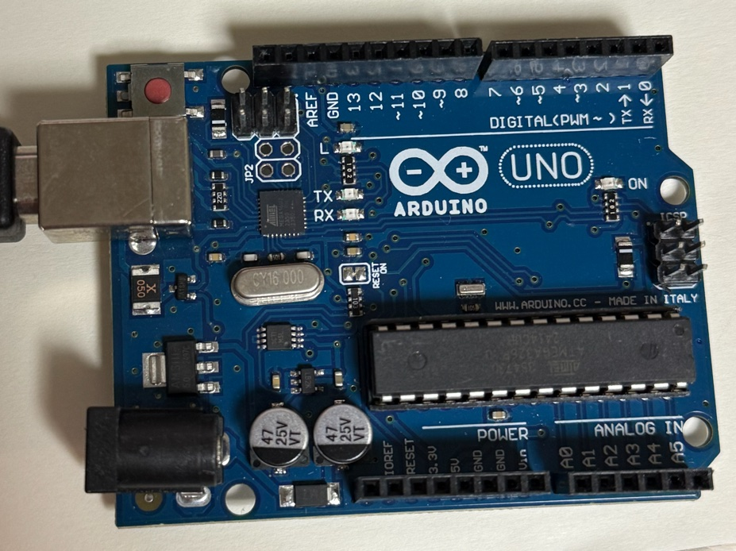<div class="meta"><span class="name">아두이노 UNO</span><span class="count">1개</span><span class="role">두뇌. 코드대로 버튼·LED·부저를 조종</span></div></div>
    <div class="part"><span class="badge" style="--b:#5E5CE6">2</span>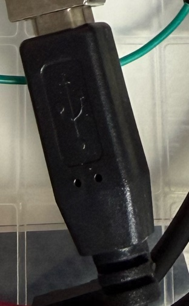<div class="meta"><span class="name">USB 케이블</span><span class="count">1개</span><span class="role">컴퓨터와 연결. 코드 넣기 + 전기</span></div></div>
    <div class="part"><span class="badge" style="--b:#30B0C7">3</span>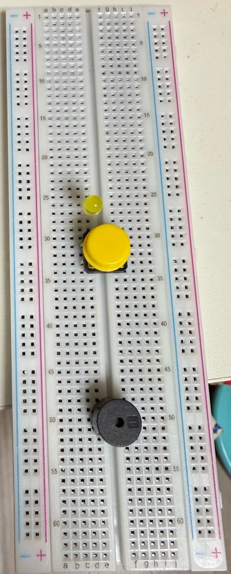<div class="meta"><span class="name">브레드보드</span><span class="count">1개</span><span class="role">부품을 꽂는 판</span></div></div>
    <div class="part"><span class="badge" style="--b:#FF9F0A">4</span>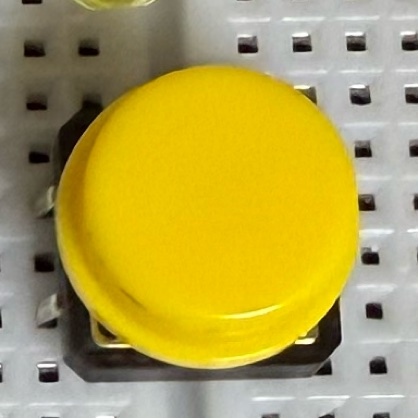<div class="meta"><span class="name">노란 큰 버튼</span><span class="count">1개</span><span class="role">모스 키</span></div></div>
    <div class="part"><span class="badge" style="--b:#FF2D55">5</span>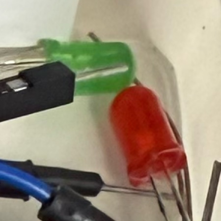<div class="meta"><span class="name">LED 노랑·빨강·초록</span><span class="count">3개</span><span class="role">점 / 대시 / 글자 확정</span></div></div>
    <div class="part"><span class="badge" style="--b:#1FA34A">6</span>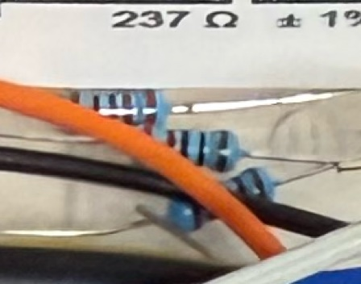<div class="meta"><span class="name">파란 저항</span><span class="count">3개</span><span class="role">LED 하나에 1개씩</span></div></div>
    <div class="part"><span class="badge" style="--b:#AF52DE">7</span>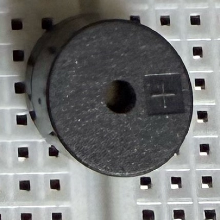<div class="meta"><span class="name">부저</span><span class="count">1개</span><span class="role">삐- 소리</span></div></div>
    <div class="part"><span class="badge" style="--b:#FF3B30">8</span>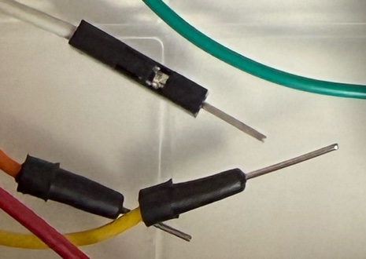<div class="meta"><span class="name">점퍼선 (양쪽 끝 핀)</span><span class="count">8개 (6단계까지 하면 11개)</span><span class="role">연결선. 검정 = GND</span></div></div>
    <div class="part"><span class="badge" style="--b:#00A6A6">9</span><span class="tag">선택</span>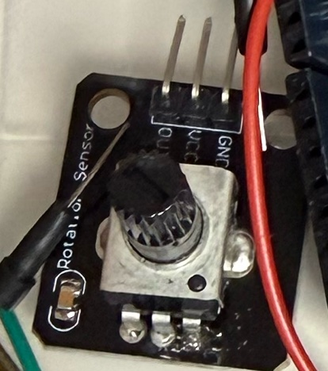<div class="meta"><span class="name">회전 센서</span><span class="count">1개 + 수-수 선 3개</span><span class="role">소리 높이 손잡이</span></div></div>
    <div class="part"><span class="badge" style="--b:#8E8E93">10</span><span class="tag">참고</span>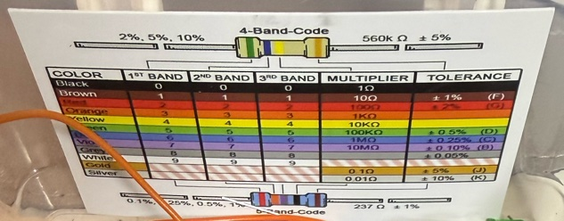<div class="meta"><span class="name">저항 색깔표</span><span class="count">회로에 안 꽂음</span><span class="role">띠 색으로 저항값 읽기</span></div></div>
  </div>
  <div class="labeled">
    <figure>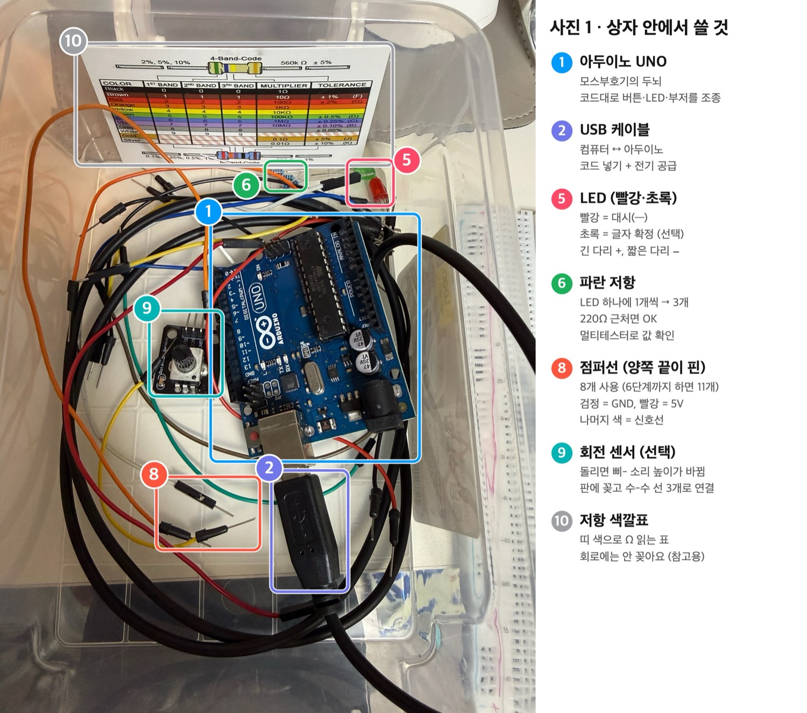<figcaption>사진 1 · 상자 안</figcaption></figure>
    <figure>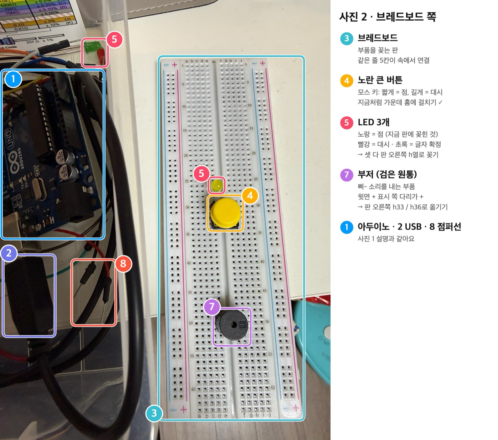<figcaption>사진 2 · 브레드보드 쪽</figcaption></figure>
  </div>
  <div class="callout">
    <b>지금 판에서 바꿀 것</b>
    <ul>
      <li>노란 LED: 판 왼쪽 → 오른쪽 <code class="hole">h10</code>/<code class="hole">h11</code> (3단계)</li>
      <li>부저: 48~51번 줄 → <code class="hole">h33</code>/<code class="hole">h36</code> (5단계)</li>
      <li>버튼: 지금 자리 그대로 (2단계)</li>
    </ul>
  </div>
</section>

<section id="board">
  <div class="sec-head"><h2>브레드보드 읽는 법</h2><p>이것만 알면 나머지 단계가 쉬워져요.</p></div>
  <div class="step-grid">
    <div class="side">
      <figure class="photo"><figcaption>내 브레드보드. 줄 번호 1~63, 가로 칸 a~j</figcaption></figure>
    </div>
    <div class="main">
      <div class="board-wrap"><svg class="bb" data-step="0" viewBox="0 0 680 530" role="img" aria-label="브레드보드 속 연결 구조"></svg></div>
      <ol class="todo">
        <li><span class="sw" style="--w:#2BB38A"></span><span>같은 줄 번호에서 <b>a~e 5칸</b>은 속에서 금속 집게 하나로 이어져 있어요. <b>f~j 5칸</b>도 마찬가지예요.</span></li>
        <li><span class="sw" style="--w:#F07A4A"></span><span>가운데 홈을 넘어가면 끊겨요. 그래서 10번 줄 왼쪽(초록)과 오른쪽(주황)은 서로 연결되지 않아요.</span></li>
        <li><span class="sw" style="--w:var(--rail-neg)"></span><span>양 끝 세로줄(레일)은 위아래로 길게 이어져 있어요. <b>파란 −</b> = GND, <b>빨간 +</b> = 5V로 써요.</span></li>
      </ol>
      <p class="note">레일이 30번 줄쯤에서 끊긴 판도 있어요. 아래쪽 부품만 안 되면 위아래 파란 줄을 짧은 선으로 이어 주세요.</p>
    </div>
  </div>
</section>

<section id="pins">
  <div class="sec-head"><h2>아두이노에서 핀 찾기</h2><p>USB를 왼쪽에 두고 위에서 보면 이렇게 보여요. 위쪽 긴 줄이 DIGITAL(2~8번), 아래쪽 줄이 POWER(5V, GND)와 ANALOG IN(A0)이에요. 동그라미 친 구멍만 써요.</p></div>
  <div class="pins-grid">
    <figure class="photo pin-photo">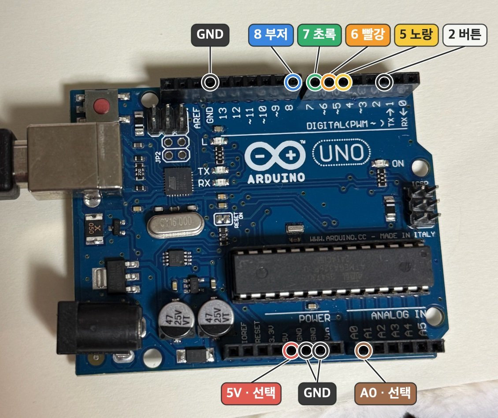<figcaption>내 아두이노. 태그 색 = 그 구멍에 꽂을 점퍼선 색</figcaption></figure>
    <div class="main">
      <ol class="todo">
        <li><span class="sw" style="--w:#2B2B2B"></span><span><b>검정</b> = GND (3개, 6단계까지 하면 4개). 아두이노 GND 핀은 3개 중 아무거나</span></li>
        <li><span class="sw" style="--w:#F2F2EE"></span><span><b>흰색</b> = 2번 (버튼)</span></li>
        <li><span class="sw" style="--w:#F2C230"></span><span><b>노랑</b> = 5번 · <span class="sw" style="--w:#F08A24;display:inline-block;margin:0 4px -1px;vertical-align:baseline"></span><b>주황</b> = 6번 · <span class="sw" style="--w:#2FA35A;display:inline-block;margin:0 4px -1px;vertical-align:baseline"></span><b>초록</b> = 7번 · <span class="sw" style="--w:#2F6FD6;display:inline-block;margin:0 4px -1px;vertical-align:baseline"></span><b>파랑</b> = 8번</span></li>
        <li><span class="sw" style="--w:#D64541"></span><span><b>빨강</b> = 5V (회전 센서를 쓸 때만)</span></li>
      </ol>
      <p class="note">색은 전기적으로 아무 상관이 없어요. 정해 두면 나중에 틀린 선을 찾기 쉬울 뿐이에요. 검정이 모자라면 갈색 같은 남는 색을 GND로 써요.</p>
    </div>
  </div>
</section>

<section id="step-1">
  <div class="step-head"><span class="step-no">1</span><div class="t"><h2>GND 선 하나</h2><p class="lede">모든 부품의 − 쪽이 모일 길을 먼저 만들어요.</p></div><label class="done-box"><input type="checkbox" id="done-1" data-s="1"> 다 꽂았어요</label></div>
  <div class="step-grid">
    <div class="side">
      <figure class="photo"><figcaption>점퍼선. 양쪽 끝이 핀이에요. 검정 1개를 꺼내요.</figcaption></figure>
    </div>
    <div class="main">
      <div class="board-wrap"><svg class="bb" data-step="1" viewBox="0 0 680 530" role="img" aria-label="1단계 배선: GND에서 파란 레일로"></svg></div>
      <ol class="todo">
        <li><span class="sw" style="--w:#2B2B2B"></span><span><b>검정 선 1개</b>: 한쪽 끝 → 아두이노 <b>GND</b> (POWER 줄의 GND 아무거나), 다른 쪽 끝 → 판 오른쪽 <b>파란 − 줄</b> 아무 칸 (그림은 39번 줄 옆)</span></li>
      </ol>
      <p class="note">이제 오른쪽 파란 세로줄 전체가 GND예요.</p>
    </div>
  </div>
</section>

<section id="step-2">
  <div class="step-head"><span class="step-no">2</span><div class="t"><h2>버튼은 가운데 홈에 걸치기</h2><p class="lede">모스 키예요. <b>버튼 1개 + 선 2개</b>(흰 선 하나, 검정 선 하나). 버튼은 지금 판에 꽂힌 자리를 그대로 써도 돼요.</p></div><label class="done-box"><input type="checkbox" id="done-2" data-s="2"> 다 꽂았어요</label></div>
  <div class="step-grid">
    <div class="side">
      <figure class="photo"><figcaption>지금 내 버튼. 이미 홈에 잘 걸쳐 있어요.</figcaption></figure>
      <figure class="detail">
        <svg viewBox="0 0 220 170" role="img" aria-label="버튼 다리 네 개 중 대각선 두 개를 쓰는 그림">
          <rect x="50" y="30" width="120" height="100" rx="6" fill="#5F5E5A"/>
          <rect x="40" y="34" width="10" height="10" fill="#D3D1C7"/><rect x="170" y="34" width="10" height="10" fill="#D3D1C7"/>
          <rect x="40" y="116" width="10" height="10" fill="#D3D1C7"/><rect x="170" y="116" width="10" height="10" fill="#D3D1C7"/>
          <circle cx="110" cy="80" r="32" fill="#FAC775" stroke="#BA7517"/>
          <line x1="45" y1="39" x2="175" y2="121" style="stroke:var(--signal)" stroke-width="3" stroke-dasharray="6 4"/>
          <circle cx="45" cy="39" r="9" fill="none" style="stroke:var(--signal)" stroke-width="2.5"/>
          <circle cx="175" cy="121" r="9" fill="none" style="stroke:var(--signal)" stroke-width="2.5"/>
          <text x="45" y="16" text-anchor="middle" class="b">2번 핀 쪽</text>
          <text x="175" y="158" text-anchor="middle" class="b">GND 쪽</text>
        </svg>
        <figcaption>대각선 두 다리만 쓰면 버튼 방향은 상관없어요.</figcaption>
      </figure>
    </div>
    <div class="main">
      <div class="board-wrap"><svg class="bb" data-step="2" viewBox="0 0 680 530" role="img" aria-label="2단계 배선: 버튼"></svg></div>
      <ol class="todo">
        <li><span class="sw part" style="--w:#FAC775"></span><span>버튼 다리 4개가 홈 양쪽에 2개씩 오도록 꽂기 (왼쪽 <code class="hole">d</code>열, 오른쪽 <code class="hole">g</code>열)</span></li>
        <li><span class="sw" style="--w:#F2F2EE"></span><span>흰 선: 아두이노 <b>2번</b> → <code class="hole">a24</code> (왼쪽 위 다리와 같은 줄)</span></li>
        <li><span class="sw" style="--w:#2B2B2B"></span><span>검정 선: <code class="hole">j26</code> → 파란 − 줄 (오른쪽 아래 다리와 같은 줄)</span></li>
      </ol>
      <p class="why"><b>왜 걸쳐요?</b> 한쪽에만 꽂으면 같은 줄에 들어간 다리끼리 늘 붙어서, 버튼을 안 눌러도 계속 눌린 걸로 읽혀요. 버튼에는 저항이 필요 없어요. 코드가 아두이노 안의 저항을 대신 써요.</p>
      <div class="why row-match">
        <p><b>버튼 줄 맞추는 법</b> 위의 24 · 26번은 예시예요. 판은 <b>같은 줄끼리만</b> 이어지니까, 선은 반드시 <b>내 버튼 다리가 들어간 줄</b>에 꽂아야 해요.</p>
        <svg viewBox="0 0 520 150" role="img" aria-label="선이 버튼 다리 줄과 맞을 때와 어긋날 때 비교">
          <g>
            <text x="0" y="14" class="rm-h">✗ 어긋남: 눌러도 안 멈춰요</text>
            <text x="2" y="44" class="rm-n">24</text><text x="2" y="76" class="rm-n">26</text><text x="2" y="108" class="rm-n">28</text><text x="2" y="140" class="rm-n">30</text>
            <line x1="24" y1="40" x2="236" y2="40" class="rm-row"/><line x1="24" y1="72" x2="236" y2="72" class="rm-row"/><line x1="24" y1="104" x2="236" y2="104" class="rm-row"/><line x1="24" y1="136" x2="236" y2="136" class="rm-row"/>
            <rect x="80" y="94" width="100" height="52" rx="5" fill="#5F5E5A"/><circle cx="130" cy="120" r="18" fill="#FAC775"/>
            <circle cx="76" cy="104" r="5" fill="#D3D1C7"/><circle cx="184" cy="104" r="5" fill="#D3D1C7"/><circle cx="76" cy="136" r="5" fill="#D3D1C7"/><circle cx="184" cy="136" r="5" fill="#D3D1C7"/>
            <circle cx="34" cy="40" r="6" fill="#2B2B2B"/><text x="44" y="34" class="rm-t">2번 선</text>
            <circle cx="226" cy="72" r="6" fill="#2B2B2B"/><text x="168" y="66" class="rm-t">GND 선</text>
          </g>
          <g transform="translate(272 0)">
            <text x="0" y="14" class="rm-h rm-ok">✓ 맞음: 다리와 같은 줄</text>
            <text x="2" y="44" class="rm-n">24</text><text x="2" y="76" class="rm-n">26</text><text x="2" y="108" class="rm-n">28</text><text x="2" y="140" class="rm-n">30</text>
            <line x1="24" y1="40" x2="236" y2="40" class="rm-row"/><line x1="24" y1="72" x2="236" y2="72" class="rm-row"/><line x1="24" y1="104" x2="236" y2="104" class="rm-row rm-on"/><line x1="24" y1="136" x2="236" y2="136" class="rm-row rm-on"/>
            <rect x="80" y="94" width="100" height="52" rx="5" fill="#5F5E5A"/><circle cx="130" cy="120" r="18" fill="#FAC775"/>
            <circle cx="76" cy="104" r="5" fill="#D3D1C7"/><circle cx="184" cy="104" r="5" fill="#D3D1C7"/><circle cx="76" cy="136" r="5" fill="#D3D1C7"/><circle cx="184" cy="136" r="5" fill="#D3D1C7"/>
            <circle cx="34" cy="104" r="6" fill="#2B2B2B"/><text x="30" y="92" class="rm-t">a28</text>
            <circle cx="226" cy="136" r="6" fill="#2B2B2B"/><text x="206" y="124" class="rm-t">j30</text>
          </g>
        </svg>
        <ol>
          <li>버튼을 살짝 들어 <b>다리 4개가 몇 번 줄</b>에 들어가는지 봐요 (위 다리 한 줄, 아래 다리 한 줄).</li>
          <li>2번에서 오는 선 → <b>위 다리 줄의 a칸</b> &nbsp;·&nbsp; − 줄로 가는 선 → <b>아래 다리 줄의 j칸</b> (대각선).</li>
          <li>아두이노 쪽 선 끝도 <b>2번 구멍에 끝까지</b> 꾹 눌러 꽂아요. 떠 있으면 연결이 안 돼요.</li>
        </ol>
        <p class="rm-test"><b>확인:</b> Serial Monitor를 열고 버튼을 누르고 있으면 노란 LED와 소리가 나와요 (STILL HERE 코드라면 모두 멈추고 <code>( 여백 )</code>이 찍혀요). 아무 변화가 없으면 줄이 어긋났거나 2번 선이 덜 꽂힌 거예요.</p>
      </div>
    </div>
  </div>
</section>

<section id="step-3">
  <div class="step-head"><span class="step-no">3</span><div class="t"><h2>노란 LED + 저항 = 점(·)</h2><p class="lede">버튼을 짧게 누르면 켜지는 불이에요. 지금 왼쪽에 꽂힌 노란 LED를 빼서 옮겨요.</p></div><label class="done-box"><input type="checkbox" id="done-3" data-s="3"> 다 꽂았어요</label></div>
  <div class="step-grid">
    <div class="side">
      <figure class="photo">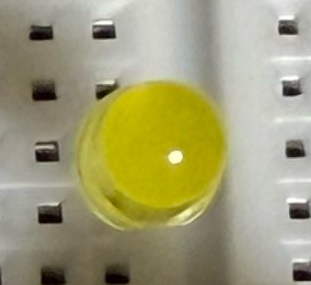<figcaption>지금 내 노란 LED</figcaption></figure>
      <figure class="detail">
        <svg viewBox="0 0 200 200" role="img" aria-label="LED 긴 다리는 플러스, 짧은 다리는 마이너스">
          <text x="100" y="22" text-anchor="middle">테두리 평평한 쪽 = −</text>
          <path d="M75 92 L75 64 A25 25 0 0 1 125 64 L125 92 Z" fill="#FAC775" stroke="#BA7517"/>
          <rect x="66" y="92" width="59" height="9" fill="#FAC775" stroke="#BA7517"/>
          <line x1="88" y1="101" x2="88" y2="184" stroke="#8A9391" stroke-width="3"/>
          <line x1="112" y1="101" x2="112" y2="158" stroke="#8A9391" stroke-width="3"/>
          <text x="82" y="186" text-anchor="end" class="b">+ 긴 다리</text>
          <text x="118" y="160" class="b">− 짧은 다리</text>
        </svg>
        <figcaption>긴 다리(+)는 아두이노 핀 쪽, 짧은 다리(−)는 GND 쪽</figcaption>
      </figure>
      <figure class="photo"><figcaption>내 파란 저항. 이 중 1개</figcaption></figure>
      <figure class="detail">
        <svg viewBox="0 0 220 108" role="img" aria-label="220옴 저항 색띠: 빨강 빨강 검정 검정 갈색">
          <line x1="8" y1="40" x2="212" y2="40" stroke="#8A9391" stroke-width="3"/>
          <rect x="55" y="26" width="110" height="28" rx="10" fill="#85B7EB" stroke="#185FA5"/>
          <rect x="68" y="26" width="7" height="28" fill="#E24B4A"/><rect x="84" y="26" width="7" height="28" fill="#E24B4A"/>
          <rect x="100" y="26" width="7" height="28" fill="#2C2C2A"/><rect x="116" y="26" width="7" height="28" fill="#2C2C2A"/>
          <rect x="146" y="26" width="7" height="28" fill="#8B4513"/>
          <text x="110" y="80" text-anchor="middle" class="b">220Ω = 빨 빨 검 검 · 갈</text>
          <text x="110" y="100" text-anchor="middle">방향은 상관없어요</text>
        </svg>
        <figcaption>5V − LED 약 2V = 3V를 저항이 맡아요. 3V ÷ 0.015A ≈ 200Ω → 220Ω. 220Ω~1kΩ면 OK</figcaption>
      </figure>
    </div>
    <div class="main">
      <div class="board-wrap"><svg class="bb" data-step="3" viewBox="0 0 680 530" role="img" aria-label="3단계 배선: 노란 LED와 저항"></svg></div>
      <ol class="todo">
        <li><span class="sw" style="--w:#F2C230"></span><span>노랑 선: 아두이노 <b>5번</b> → <code class="hole">f10</code></span></li>
        <li><span class="sw led" style="--w:#FAC775"></span><span>노랑 LED: 긴 다리(+) → <code class="hole">h10</code>, 짧은 다리(−) → <code class="hole">h11</code></span></li>
        <li><span class="sw res"></span><span>저항: 한쪽 다리 → <code class="hole">j11</code>, 다른 쪽 → 파란 − 줄</span></li>
      </ol>
      <p class="why"><b>전기 길</b> 5번 핀 → <code class="hole">f10</code> → (같은 줄) → LED + → LED − → <code class="hole">j11</code> → 저항 → 파란 − 줄 → GND. 한 군데라도 끊기면 안 켜져요.</p>
      <p class="note">저항값이 궁금하면 멀티테스터 다이얼을 Ω(2k)에 두고 저항 양쪽 다리에 대 보세요. 손가락으로 금속을 같이 잡으면 값이 틀어져요.</p>
    </div>
  </div>
</section>

<section id="step-4">
  <div class="step-head"><span class="step-no">4</span><div class="t"><h2>빨간·초록 LED</h2><p class="lede">3단계를 두 번 더 해요. 빨강 = 대시(—), 초록 = 글자 확정.</p></div><label class="done-box"><input type="checkbox" id="done-4" data-s="4"> 다 꽂았어요</label></div>
  <div class="step-grid">
    <div class="side">
      <figure class="photo"><figcaption>상자 속 초록·빨간 LED. 다리 길이로 +/− 구분</figcaption></figure>
      <figure class="photo"><figcaption>저항 2개 더 (LED마다 1개)</figcaption></figure>
    </div>
    <div class="main">
      <div class="board-wrap"><svg class="bb" data-step="4" viewBox="0 0 680 530" role="img" aria-label="4단계 배선: 빨간 LED와 초록 LED"></svg></div>
      <ol class="todo">
        <li><span class="sw" style="--w:#F08A24"></span><span>주황 선: <b>6번</b> → <code class="hole">f14</code></span></li>
        <li><span class="sw led" style="--w:#F09595"></span><span>빨강 LED: 긴 다리 → <code class="hole">h14</code>, 짧은 다리 → <code class="hole">h15</code></span></li>
        <li><span class="sw res"></span><span>저항: <code class="hole">j15</code> → 파란 − 줄</span></li>
        <li><span class="sw" style="--w:#2FA35A"></span><span>초록 선: <b>7번</b> → <code class="hole">f18</code></span></li>
        <li><span class="sw led" style="--w:#97C459"></span><span>초록 LED: 긴 다리 → <code class="hole">h18</code>, 짧은 다리 → <code class="hole">h19</code></span></li>
        <li><span class="sw res"></span><span>저항: <code class="hole">j19</code> → 파란 − 줄</span></li>
      </ol>
      <p class="note">초록 LED는 없어도 모스부호기는 작동해요. 저항이 2개뿐이면 초록은 건너뛰어요.</p>
      <div class="why green-when">
        <p><b>초록은 언제 켜져요?</b> 버튼에서 손을 떼고 <b>0.8초 동안 안 누르면</b>, 아두이노가 지금까지 누른 점·대시를 한 글자로 읽어요. 그 순간 초록이 <b>한 번 깜빡(0.15초)</b>해요. "이 글자 받았어요"라는 신호예요.</p>
        <svg viewBox="0 0 520 112" role="img" aria-label="S를 입력할 때 초록 LED가 켜지는 시점">
          <text x="0" y="22" class="gw-l">버튼</text>
          <rect x="70" y="10" width="26" height="16" rx="3" fill="#F2C230"/><rect x="116" y="10" width="26" height="16" rx="3" fill="#F2C230"/><rect x="162" y="10" width="26" height="16" rx="3" fill="#F2C230"/>
          <text x="83" y="44" class="gw-s" text-anchor="middle">·</text><text x="129" y="44" class="gw-s" text-anchor="middle">·</text><text x="175" y="44" class="gw-s" text-anchor="middle">·</text>
          <line x1="188" y1="18" x2="330" y2="18" class="gw-gap"/>
          <text x="259" y="12" class="gw-t" text-anchor="middle">손 떼고 0.8초 기다림</text>
          <text x="0" y="78" class="gw-l">초록</text>
          <circle cx="338" cy="72" r="11" fill="#2FA35A"/><circle cx="338" cy="72" r="20" fill="#2FA35A" opacity=".25"/>
          <line x1="338" y1="28" x2="338" y2="52" class="gw-gap"/>
          <text x="366" y="69" class="gw-t">깜빡! → 화면에 <tspan class="gw-b">-&gt; S</tspan></text>
          <text x="366" y="88" class="gw-t">2초 넘게 쉬면 띄어쓰기</text>
        </svg>
        <ul>
          <li><b>안 켜질 때:</b> 누르는 중이거나 0.8초가 아직 안 지났을 때예요. 글자 사이를 0.8초보다 짧게 쉬면 두 글자가 합쳐져서 <code>?</code>가 나와요.</li>
          <li><b>그 밖에 켜지는 때:</b> 전원을 켜거나 Serial Monitor를 열면 노랑 → 빨강 → 초록 순서로 한 번씩 켜져요 (점검).</li>
          <li>Serial Monitor에 글자를 써서 보낼 때는 노랑·빨강과 소리만 나오고 초록은 켜지지 않아요.</li>
        </ul>
      </div>
    </div>
  </div>
</section>

<section id="step-5">
  <div class="step-head"><span class="step-no">5</span><div class="t"><h2>부저</h2><p class="lede">삐- 소리를 내요. 지금 판 아래쪽에 꽂힌 걸 옮겨요.</p></div><label class="done-box"><input type="checkbox" id="done-5" data-s="5"> 다 꽂았어요</label></div>
  <div class="step-grid">
    <div class="side">
      <figure class="photo"><figcaption>지금 내 부저. 윗면에 + 표시가 보여요</figcaption></figure>
      <figure class="detail">
        <svg viewBox="0 0 200 200" role="img" aria-label="부저 플러스 표시 쪽 긴 다리가 플러스">
          <text x="100" y="18" text-anchor="middle">윗면 + 표시 쪽 다리가 +</text>
          <circle cx="100" cy="82" r="50" fill="#444441"/>
          <circle cx="100" cy="82" r="7" fill="#B4B2A9"/>
          <line x1="72" y1="110" x2="88" y2="110" stroke="#E6E6E0" stroke-width="3"/><line x1="80" y1="102" x2="80" y2="118" stroke="#E6E6E0" stroke-width="3"/>
          <line x1="88" y1="132" x2="88" y2="188" stroke="#8A9391" stroke-width="3"/>
          <line x1="112" y1="132" x2="112" y2="170" stroke="#8A9391" stroke-width="3"/>
          <text x="82" y="190" text-anchor="end" class="b">+ 긴 다리</text>
          <text x="118" y="172" class="b">−</text>
        </svg>
        <figcaption>다리 길이가 비슷하면 + 표시 쪽이 +</figcaption>
      </figure>
    </div>
    <div class="main">
      <div class="board-wrap"><svg class="bb" data-step="5" viewBox="0 0 680 530" role="img" aria-label="5단계 배선: 부저"></svg></div>
      <ol class="todo">
        <li><span class="sw" style="--w:#2F6FD6"></span><span>파랑 선: <b>8번</b> → <code class="hole">f33</code></span></li>
        <li><span class="sw part" style="--w:#444441"></span><span>부저: + 다리 → <code class="hole">h33</code>, − 다리 → <code class="hole">h36</code></span></li>
        <li><span class="sw" style="--w:#2B2B2B"></span><span>검정 선: <code class="hole">j36</code> → 파란 − 줄</span></li>
      </ol>
      <p class="note">부저 다리가 3칸 간격이 아니면 다리가 들어가는 줄에 꽂고, + 다리 줄에 파랑 선, − 다리 줄에 검정 선만 지키면 돼요.</p>
    </div>
  </div>
</section>

<section id="step-6">
  <div class="step-head"><span class="step-no">6</span><div class="t"><h2>회전 센서<span class="opt">선택</span></h2><p class="lede">손잡이를 돌리면 삐- 소리 높이가 바뀌어요. <b>암-수 선은 없어도 돼요.</b> 센서를 판에 꽂고, 지금 쓰는 수-수 선 3개로 아두이노에 연결해요.</p></div><label class="done-box"><input type="checkbox" id="done-6" data-s="6"> 다 꽂았어요 / 건너뜀</label></div>
  <div class="step-grid">
    <div class="side">
      <figure class="photo"><figcaption>내 회전 센서. 핀 옆 글씨 OUT · VCC · GND</figcaption></figure>
      <figure class="detail">
        <svg viewBox="0 0 230 172" role="img" aria-label="회전 센서를 브레드보드 위에 세워서 핀 3개를 꽂은 옆모습">
          <rect x="62" y="8" width="106" height="96" rx="6" fill="#2C2C2A"/>
          <circle cx="115" cy="54" r="26" fill="#B4B2A9"/><circle cx="115" cy="54" r="11" fill="#444441"/>
          <line x1="80" y1="104" x2="80" y2="134" stroke="#D3D1C7" stroke-width="4"/>
          <line x1="115" y1="104" x2="115" y2="134" stroke="#D3D1C7" stroke-width="4"/>
          <line x1="150" y1="104" x2="150" y2="134" stroke="#D3D1C7" stroke-width="4"/>
          <rect x="12" y="120" width="206" height="22" rx="4" fill="#E3E8E6" stroke="#A7B1AE"/>
          <text x="80" y="160" text-anchor="middle" class="b">OUT</text>
          <text x="115" y="160" text-anchor="middle" class="b">VCC</text>
          <text x="150" y="160" text-anchor="middle" class="b">GND</text>
        </svg>
        <figcaption>옆모습: 판 위에 세워 꽂기</figcaption>
      </figure>
    </div>
    <div class="main">
      <div class="board-wrap"><svg class="bb" data-step="6" viewBox="0 0 680 620" role="img" aria-label="6단계 배선: 판에 꽂은 회전 센서에서 아두이노 A0, 5V, GND로"></svg></div>
      <ol class="todo">
        <li><span class="sw part" style="--w:#2C2C2A"></span><span>센서 핀 3개를 판 왼쪽 <code class="hole">d45</code> · <code class="hole">d46</code> · <code class="hole">d47</code>에 세로로 꽂아 세우기 (좁으면 e열도 OK). 센서 글씨로 어느 줄이 OUT · VCC · GND인지 확인</span></li>
        <li><span class="sw" style="--w:#8B5A3C"></span><span>갈색 선: <code class="hole">a45</code> (OUT 줄) → 아두이노 <b>A0</b></span></li>
        <li><span class="sw" style="--w:#D64541"></span><span>빨강 선: <code class="hole">a46</code> (VCC 줄) → 아두이노 <b>5V</b></span></li>
        <li><span class="sw" style="--w:#2B2B2B"></span><span>검정 선: <code class="hole">a47</code> (GND 줄) → 아두이노 <b>GND</b> (아직 안 쓴 GND 핀)</span></li>
        <li><span class="sw part" style="--w:var(--accent)"></span><span>Arduino IDE에서 코드 <b>27번째 줄</b>(“설정 (여기만 바꾸면 됨)” 바로 아래)의 <code class="hole">false</code>를 지우고 <code class="hole">true</code>로 써요. 그다음 왼쪽 위 <kbd>→</kbd> 업로드 버튼</span></li>
      </ol>
      <pre class="out">26  // ---------- 설정 (여기만 바꾸면 됨) ----------
27  const bool USE_KNOB      = <b>true</b>;   ← false를 true로
28  const bool BUZZER_ACTIVE = false;
29  const int  BASE_FREQ     = 800;</pre>
      <p class="why"><b>왜 판에 꽂아요?</b> 센서 핀도 수(핀)라서 수-수 선을 바로 꽂을 수 없어요. 센서를 판 구멍에 꽂으면, 같은 줄 a칸에 수-수 선을 꽂아 이어 쓸 수 있어요. 판이 소켓 역할을 하는 거예요.</p>
      <p class="note">순서가 GND · VCC · OUT으로 꽂히면 선도 그 줄에 맞춰 바꿔요. 6단계는 건너뛰어도 돼요.</p>
    </div>
  </div>
</section>

<section id="step-7">
  <div class="step-head"><span class="step-no">7</span><div class="t"><h2>업로드하고 시험하기</h2><p class="lede">코드를 아두이노에 넣고, 켜질 때 스스로 하는 점검을 확인해요.</p></div><label class="done-box"><input type="checkbox" id="done-7" data-s="7"> 작동해요</label></div>
  <div class="step-grid">
    <div class="side">
      <figure class="photo"><figcaption>USB 케이블로 컴퓨터와 연결</figcaption></figure>
    </div>
    <div class="main">
      <ol class="steps-list">
        <li><a href="https://www.arduino.cc/en/software" target="_blank" rel="noopener">Arduino IDE 2</a>를 설치해요.</li>
        <li><b>File(파일) → Open…(열기)</b> → <code class="hole">morse_machine</code> 폴더 안의 <code class="hole">morse_machine.ino</code>를 열어요. 코드 칸에 “put your setup code here”만 보이면 아직 안 연 거예요. 다른 컴퓨터라면 아래 <a href="#code">코드 전체</a>를 복사해 붙여넣어요.</li>
        <li>USB를 꽂고 <b>Tools(도구) → Board(보드) → Arduino AVR Boards → Arduino UNO</b>. 이름 앞에 ✓가 있으면 이미 된 거예요.</li>
        <li><b>Tools(도구) → Port(포트) → /dev/cu.usbmodem…</b> (뒤에 Arduino Uno가 붙은 것). 안 보이면 USB를 뺐다 다시 꽂아요. 더 쉬운 방법: 업로드 버튼 오른쪽 <b>Select Board</b> 칸에서 Arduino Uno 고르기</li>
        <li>왼쪽 위 <kbd>→</kbd> <b>Upload</b>(업로드) 버튼. 아래에 “Done uploading.”(업로드 완료)이 뜨면 성공이에요.</li>
        <li>오른쪽 위 돋보기 <b>Serial Monitor</b>(시리얼 모니터)를 열고 <b>9600 baud</b>, 줄 끝은 <b>New Line</b>.</li>
      </ol>
      <div class="check" role="table" aria-label="켜질 때 자가 점검">
        <div role="columnheader">켜질 때 보이는 것</div><div role="columnheader">뜻</div>
        <div>LED가 노랑 → 빨강 → 초록 차례로 켜짐</div><div>LED 배선 OK. 안 켜지는 색은 그 LED와 저항을 확인</div>
        <div>낮은 음 → 중간 음 → 높은 음</div><div>수동 부저. 음 높이 바꾸기 가능</div>
        <div>세 번 다 똑같은 “삐”</div><div>능동 부저. 코드 <b>28번째 줄</b> <code class="hole">BUZZER_ACTIVE</code>의 <code class="hole">false</code>를 <code class="hole">true</code>로 바꾸고 다시 업로드</div>
      </div>
      <p>시리얼 모니터에는 이렇게 떠요.</p>
      <pre class="out">=== 모스부호기 준비 완료 ===
버튼: 짧게 = 점(.)  길게 = 대시(-)
영어/숫자를 입력하고 Enter → 자동 송신
새 문장: 5초 쉬기 (또는 new 입력)</pre>
      <p>버튼으로 <b>짧게 3번 · 길게 3번 · 짧게 3번</b>(글자 사이에 하나 셀 만큼 쉬기)을 치면 (자세한 건 <a href="#use">8 치는 법</a>):</p>
      <pre class="out">...   -&gt;  S      [ S ]
---   -&gt;  O      [ SO ]
...   -&gt;  S      [ SOS ]</pre>
      <p class="note">반대로 시리얼 모니터 입력칸에 <code class="hole">HELLO</code>를 치고 Enter를 누르면 LED와 부저가 자동으로 모스부호를 보내요.</p>
    </div>
  </div>
</section>

<section id="use">
  <div class="step-head"><span class="step-no">8</span><div class="t"><h2>치는 법 · 새 문장 · STILL HERE</h2><p class="lede">버튼에서 손을 떼고 <b>얼마나 쉬느냐</b>로 글자, 띄어쓰기, 새 문장이 나뉘어요.</p></div></div>
  <div class="use-grid">
    <div>
      <h3 class="use-h">쉬는 시간이 하는 일</h3>
      <svg class="gap-line" viewBox="0 0 520 96" role="img" aria-label="손을 뗀 시간에 따라 글자 확정, 띄어쓰기, 새 문장">
        <line x1="20" y1="40" x2="500" y2="40" class="gl-axis"/>
        <rect x="20" y="30" width="40" height="20" rx="4" class="gl-a"/>
        <rect x="60" y="30" width="96" height="20" rx="4" class="gl-b"/>
        <rect x="156" y="30" width="144" height="20" rx="4" class="gl-c"/>
        <rect x="300" y="30" width="200" height="20" rx="4" class="gl-d"/>
        <text x="40" y="20" class="gl-t" text-anchor="middle">점·대시 사이</text>
        <text x="108" y="20" class="gl-t" text-anchor="middle">글자 확정</text>
        <text x="228" y="20" class="gl-t" text-anchor="middle">띄어쓰기</text>
        <text x="400" y="20" class="gl-t" text-anchor="middle">문장 끝 → 새로</text>
        <text x="20" y="70" class="gl-n">0</text><text x="60" y="70" class="gl-n" text-anchor="middle">~0.5초</text>
        <text x="156" y="70" class="gl-n" text-anchor="middle">2초</text><text x="300" y="70" class="gl-n" text-anchor="middle">5초</text>
        <text x="108" y="88" class="gl-s" text-anchor="middle">초록 1번</text><text x="400" y="88" class="gl-s" text-anchor="middle">초록 2번</text>
      </svg>
      <div class="check" role="table" aria-label="쉬는 시간과 결과">
        <div role="columnheader">손 떼고 쉰 시간</div><div role="columnheader">결과</div>
        <div>아주 잠깐</div><div>같은 글자 안의 점·대시</div>
        <div>0.35~0.8초 (내가 치는 속도에 맞춰져요)</div><div><b>글자 확정</b> · 초록 1번 깜빡 · <code>-&gt; S</code></div>
        <div>2초</div><div>띄어쓰기</div>
        <div><b>5초</b></div><div><b>문장 끝 → 새 문장</b> · 초록 2번 깜빡</div>
      </div>
      <p class="why"><b><code>?</code>만 나와요?</b> 글자 사이를 안 쉬고 이어 치면 <code>...---...</code>가 한 글자로 읽혀서 <code>?</code>가 돼요. SOS는 <b>· · ·</b> (하나 세고) <b>— — —</b> (하나 세고) <b>· · ·</b> 처럼 쳐요.</p>
      <pre class="out">...   -&gt;  S      [ S ]
---   -&gt;  O      [ SO ]
...   -&gt;  S      [ SOS ]
=== 문장 끝: SOS  → 새로 치세요 ===</pre>
      <p class="note">바로 새로 치고 싶으면 Serial Monitor 입력칸에 <code class="hole">new</code>를 쓰고 Enter.</p>
    </div>
    <div>
      <h3 class="use-h">모스부호기 + STILL HERE 같이 쓰기</h3>
      <p><code class="hole">morse_all/morse_all.ino</code>를 올리면 켤 때는 모스부호기, 원할 때만 STILL HERE가 나와요.</p>
      <div class="check" role="table" aria-label="morse_all 조작법">
        <div role="columnheader">하고 싶은 것</div><div role="columnheader">방법</div>
        <div>모스부호 치기 · 송신</div><div>켜면 바로 (위와 같아요)</div>
        <div><b>STILL HERE 켜기</b></div><div>버튼 <b>3초 꾹</b> 눌렀다 떼기 (1.5초부터 초록이 깜빡이며 세어 줘요) 또는 <code class="hole">still</code> 입력</div>
        <div>잠깐 멈춤 (여백)</div><div>STILL HERE 도중 버튼 <b>누르고 있기</b>, 떼면 이어서</div>
        <div><b>STILL HERE 끄기</b></div><div>버튼 <b>3초 꾹</b> 또는 <code class="hole">stop</code> 입력 → 모스부호기로</div>
        <div>새 문장</div><div>5초 쉬기 또는 <code class="hole">new</code> 입력</div>
      </div>
      <p class="note">모드가 바뀔 때마다 초록이 3번 깜빡여요. 코드 위쪽 <code class="hole">STILL_1MIN</code>(1분/84초), <code class="hole">STILL_REPEAT</code>(반복), <code class="hole">VOLUME</code>(1~10)으로 바꿀 수 있어요. 완전히 끄려면 USB를 뽑아요.</p>
    </div>
  </div>
</section>

<section id="two-btn">
  <div class="step-head"><span class="step-no">9</span><div class="t"><h2>버튼 하나 더: 점 버튼 + 대시 버튼</h2><p class="lede">한 버튼은 <b>점(·)</b>, 새 버튼은 <b>대시(—)</b>만 쳐요. 길이를 헷갈려서 <code>?</code>가 나오는 일이 줄어요. 대시 버튼은 지금처럼 <b>꾹(0.25초 넘게)</b> 눌러야 해요.</p></div></div>
  <div class="step-grid">
    <div class="side">
      <figure class="photo"><figcaption>같은 버튼 1개 더 + 선 2개 (아무 색 1개, 검정 1개). 저항은 필요 없어요.</figcaption></figure>
    </div>
    <div class="main">
      <div class="board-wrap tb-wrap"><svg class="tb-svg" viewBox="0 0 500 320" role="img" aria-label="버튼 2개 배선: 점 버튼은 2번, 대시 버튼은 3번"><rect x="6" y="8" width="96" height="304" rx="8" class="tb-ard"/><text x="54" y="26" text-anchor="middle" class="tb-b">Arduino UNO</text><rect x="138" y="8" width="204" height="304" rx="6" class="tb-board"/><line x1="314" y1="12" x2="314" y2="308" class="tb-rm"/><line x1="328" y1="12" x2="328" y2="308" class="tb-rp"/><text x="150" y="18" text-anchor="middle" class="tb-c">a</text><text x="164" y="18" text-anchor="middle" class="tb-c">b</text><text x="178" y="18" text-anchor="middle" class="tb-c">c</text><text x="192" y="18" text-anchor="middle" class="tb-c">d</text><text x="206" y="18" text-anchor="middle" class="tb-c">e</text><text x="232" y="18" text-anchor="middle" class="tb-c">f</text><text x="246" y="18" text-anchor="middle" class="tb-c">g</text><text x="260" y="18" text-anchor="middle" class="tb-c">h</text><text x="274" y="18" text-anchor="middle" class="tb-c">i</text><text x="288" y="18" text-anchor="middle" class="tb-c">j</text><rect x="148.4" y="38.9" width="3.2" height="3.2" class="tb-h"/><rect x="162.4" y="38.9" width="3.2" height="3.2" class="tb-h"/><rect x="176.4" y="38.9" width="3.2" height="3.2" class="tb-h"/><rect x="190.4" y="38.9" width="3.2" height="3.2" class="tb-h"/><rect x="204.4" y="38.9" width="3.2" height="3.2" class="tb-h"/><rect x="230.4" y="38.9" width="3.2" height="3.2" class="tb-h"/><rect x="244.4" y="38.9" width="3.2" height="3.2" class="tb-h"/><rect x="258.4" y="38.9" width="3.2" height="3.2" class="tb-h"/><rect x="272.4" y="38.9" width="3.2" height="3.2" class="tb-h"/><rect x="286.4" y="38.9" width="3.2" height="3.2" class="tb-h"/><rect x="312.4" y="38.9" width="3.2" height="3.2" class="tb-h"/><rect x="326.4" y="38.9" width="3.2" height="3.2" class="tb-h"/><text x="144" y="56.0" text-anchor="middle" class="tb-c">24</text><rect x="148.4" y="51.4" width="3.2" height="3.2" class="tb-h"/><rect x="162.4" y="51.4" width="3.2" height="3.2" class="tb-h"/><rect x="176.4" y="51.4" width="3.2" height="3.2" class="tb-h"/><rect x="190.4" y="51.4" width="3.2" height="3.2" class="tb-h"/><rect x="204.4" y="51.4" width="3.2" height="3.2" class="tb-h"/><rect x="230.4" y="51.4" width="3.2" height="3.2" class="tb-h"/><rect x="244.4" y="51.4" width="3.2" height="3.2" class="tb-h"/><rect x="258.4" y="51.4" width="3.2" height="3.2" class="tb-h"/><rect x="272.4" y="51.4" width="3.2" height="3.2" class="tb-h"/><rect x="286.4" y="51.4" width="3.2" height="3.2" class="tb-h"/><rect x="312.4" y="51.4" width="3.2" height="3.2" class="tb-h"/><rect x="326.4" y="51.4" width="3.2" height="3.2" class="tb-h"/><rect x="148.4" y="63.9" width="3.2" height="3.2" class="tb-h"/><rect x="162.4" y="63.9" width="3.2" height="3.2" class="tb-h"/><rect x="176.4" y="63.9" width="3.2" height="3.2" class="tb-h"/><rect x="190.4" y="63.9" width="3.2" height="3.2" class="tb-h"/><rect x="204.4" y="63.9" width="3.2" height="3.2" class="tb-h"/><rect x="230.4" y="63.9" width="3.2" height="3.2" class="tb-h"/><rect x="244.4" y="63.9" width="3.2" height="3.2" class="tb-h"/><rect x="258.4" y="63.9" width="3.2" height="3.2" class="tb-h"/><rect x="272.4" y="63.9" width="3.2" height="3.2" class="tb-h"/><rect x="286.4" y="63.9" width="3.2" height="3.2" class="tb-h"/><rect x="312.4" y="63.9" width="3.2" height="3.2" class="tb-h"/><rect x="326.4" y="63.9" width="3.2" height="3.2" class="tb-h"/><text x="144" y="81.0" text-anchor="middle" class="tb-c">26</text><rect x="148.4" y="76.4" width="3.2" height="3.2" class="tb-h"/><rect x="162.4" y="76.4" width="3.2" height="3.2" class="tb-h"/><rect x="176.4" y="76.4" width="3.2" height="3.2" class="tb-h"/><rect x="190.4" y="76.4" width="3.2" height="3.2" class="tb-h"/><rect x="204.4" y="76.4" width="3.2" height="3.2" class="tb-h"/><rect x="230.4" y="76.4" width="3.2" height="3.2" class="tb-h"/><rect x="244.4" y="76.4" width="3.2" height="3.2" class="tb-h"/><rect x="258.4" y="76.4" width="3.2" height="3.2" class="tb-h"/><rect x="272.4" y="76.4" width="3.2" height="3.2" class="tb-h"/><rect x="286.4" y="76.4" width="3.2" height="3.2" class="tb-h"/><rect x="312.4" y="76.4" width="3.2" height="3.2" class="tb-h"/><rect x="326.4" y="76.4" width="3.2" height="3.2" class="tb-h"/><rect x="148.4" y="88.9" width="3.2" height="3.2" class="tb-h"/><rect x="162.4" y="88.9" width="3.2" height="3.2" class="tb-h"/><rect x="176.4" y="88.9" width="3.2" height="3.2" class="tb-h"/><rect x="190.4" y="88.9" width="3.2" height="3.2" class="tb-h"/><rect x="204.4" y="88.9" width="3.2" height="3.2" class="tb-h"/><rect x="230.4" y="88.9" width="3.2" height="3.2" class="tb-h"/><rect x="244.4" y="88.9" width="3.2" height="3.2" class="tb-h"/><rect x="258.4" y="88.9" width="3.2" height="3.2" class="tb-h"/><rect x="272.4" y="88.9" width="3.2" height="3.2" class="tb-h"/><rect x="286.4" y="88.9" width="3.2" height="3.2" class="tb-h"/><rect x="312.4" y="88.9" width="3.2" height="3.2" class="tb-h"/><rect x="326.4" y="88.9" width="3.2" height="3.2" class="tb-h"/><rect x="148.4" y="101.4" width="3.2" height="3.2" class="tb-h"/><rect x="162.4" y="101.4" width="3.2" height="3.2" class="tb-h"/><rect x="176.4" y="101.4" width="3.2" height="3.2" class="tb-h"/><rect x="190.4" y="101.4" width="3.2" height="3.2" class="tb-h"/><rect x="204.4" y="101.4" width="3.2" height="3.2" class="tb-h"/><rect x="230.4" y="101.4" width="3.2" height="3.2" class="tb-h"/><rect x="244.4" y="101.4" width="3.2" height="3.2" class="tb-h"/><rect x="258.4" y="101.4" width="3.2" height="3.2" class="tb-h"/><rect x="272.4" y="101.4" width="3.2" height="3.2" class="tb-h"/><rect x="286.4" y="101.4" width="3.2" height="3.2" class="tb-h"/><rect x="312.4" y="101.4" width="3.2" height="3.2" class="tb-h"/><rect x="326.4" y="101.4" width="3.2" height="3.2" class="tb-h"/><rect x="148.4" y="113.9" width="3.2" height="3.2" class="tb-h"/><rect x="162.4" y="113.9" width="3.2" height="3.2" class="tb-h"/><rect x="176.4" y="113.9" width="3.2" height="3.2" class="tb-h"/><rect x="190.4" y="113.9" width="3.2" height="3.2" class="tb-h"/><rect x="204.4" y="113.9" width="3.2" height="3.2" class="tb-h"/><rect x="230.4" y="113.9" width="3.2" height="3.2" class="tb-h"/><rect x="244.4" y="113.9" width="3.2" height="3.2" class="tb-h"/><rect x="258.4" y="113.9" width="3.2" height="3.2" class="tb-h"/><rect x="272.4" y="113.9" width="3.2" height="3.2" class="tb-h"/><rect x="286.4" y="113.9" width="3.2" height="3.2" class="tb-h"/><rect x="312.4" y="113.9" width="3.2" height="3.2" class="tb-h"/><rect x="326.4" y="113.9" width="3.2" height="3.2" class="tb-h"/><text x="144" y="131.0" text-anchor="middle" class="tb-c">30</text><rect x="148.4" y="126.4" width="3.2" height="3.2" class="tb-h"/><rect x="162.4" y="126.4" width="3.2" height="3.2" class="tb-h"/><rect x="176.4" y="126.4" width="3.2" height="3.2" class="tb-h"/><rect x="190.4" y="126.4" width="3.2" height="3.2" class="tb-h"/><rect x="204.4" y="126.4" width="3.2" height="3.2" class="tb-h"/><rect x="230.4" y="126.4" width="3.2" height="3.2" class="tb-h"/><rect x="244.4" y="126.4" width="3.2" height="3.2" class="tb-h"/><rect x="258.4" y="126.4" width="3.2" height="3.2" class="tb-h"/><rect x="272.4" y="126.4" width="3.2" height="3.2" class="tb-h"/><rect x="286.4" y="126.4" width="3.2" height="3.2" class="tb-h"/><rect x="312.4" y="126.4" width="3.2" height="3.2" class="tb-h"/><rect x="326.4" y="126.4" width="3.2" height="3.2" class="tb-h"/><rect x="148.4" y="138.9" width="3.2" height="3.2" class="tb-h"/><rect x="162.4" y="138.9" width="3.2" height="3.2" class="tb-h"/><rect x="176.4" y="138.9" width="3.2" height="3.2" class="tb-h"/><rect x="190.4" y="138.9" width="3.2" height="3.2" class="tb-h"/><rect x="204.4" y="138.9" width="3.2" height="3.2" class="tb-h"/><rect x="230.4" y="138.9" width="3.2" height="3.2" class="tb-h"/><rect x="244.4" y="138.9" width="3.2" height="3.2" class="tb-h"/><rect x="258.4" y="138.9" width="3.2" height="3.2" class="tb-h"/><rect x="272.4" y="138.9" width="3.2" height="3.2" class="tb-h"/><rect x="286.4" y="138.9" width="3.2" height="3.2" class="tb-h"/><rect x="312.4" y="138.9" width="3.2" height="3.2" class="tb-h"/><rect x="326.4" y="138.9" width="3.2" height="3.2" class="tb-h"/><rect x="148.4" y="151.4" width="3.2" height="3.2" class="tb-h"/><rect x="162.4" y="151.4" width="3.2" height="3.2" class="tb-h"/><rect x="176.4" y="151.4" width="3.2" height="3.2" class="tb-h"/><rect x="190.4" y="151.4" width="3.2" height="3.2" class="tb-h"/><rect x="204.4" y="151.4" width="3.2" height="3.2" class="tb-h"/><rect x="230.4" y="151.4" width="3.2" height="3.2" class="tb-h"/><rect x="244.4" y="151.4" width="3.2" height="3.2" class="tb-h"/><rect x="258.4" y="151.4" width="3.2" height="3.2" class="tb-h"/><rect x="272.4" y="151.4" width="3.2" height="3.2" class="tb-h"/><rect x="286.4" y="151.4" width="3.2" height="3.2" class="tb-h"/><rect x="312.4" y="151.4" width="3.2" height="3.2" class="tb-h"/><rect x="326.4" y="151.4" width="3.2" height="3.2" class="tb-h"/><rect x="148.4" y="163.9" width="3.2" height="3.2" class="tb-h"/><rect x="162.4" y="163.9" width="3.2" height="3.2" class="tb-h"/><rect x="176.4" y="163.9" width="3.2" height="3.2" class="tb-h"/><rect x="190.4" y="163.9" width="3.2" height="3.2" class="tb-h"/><rect x="204.4" y="163.9" width="3.2" height="3.2" class="tb-h"/><rect x="230.4" y="163.9" width="3.2" height="3.2" class="tb-h"/><rect x="244.4" y="163.9" width="3.2" height="3.2" class="tb-h"/><rect x="258.4" y="163.9" width="3.2" height="3.2" class="tb-h"/><rect x="272.4" y="163.9" width="3.2" height="3.2" class="tb-h"/><rect x="286.4" y="163.9" width="3.2" height="3.2" class="tb-h"/><rect x="312.4" y="163.9" width="3.2" height="3.2" class="tb-h"/><rect x="326.4" y="163.9" width="3.2" height="3.2" class="tb-h"/><rect x="148.4" y="176.4" width="3.2" height="3.2" class="tb-h"/><rect x="162.4" y="176.4" width="3.2" height="3.2" class="tb-h"/><rect x="176.4" y="176.4" width="3.2" height="3.2" class="tb-h"/><rect x="190.4" y="176.4" width="3.2" height="3.2" class="tb-h"/><rect x="204.4" y="176.4" width="3.2" height="3.2" class="tb-h"/><rect x="230.4" y="176.4" width="3.2" height="3.2" class="tb-h"/><rect x="244.4" y="176.4" width="3.2" height="3.2" class="tb-h"/><rect x="258.4" y="176.4" width="3.2" height="3.2" class="tb-h"/><rect x="272.4" y="176.4" width="3.2" height="3.2" class="tb-h"/><rect x="286.4" y="176.4" width="3.2" height="3.2" class="tb-h"/><rect x="312.4" y="176.4" width="3.2" height="3.2" class="tb-h"/><rect x="326.4" y="176.4" width="3.2" height="3.2" class="tb-h"/><rect x="148.4" y="188.9" width="3.2" height="3.2" class="tb-h"/><rect x="162.4" y="188.9" width="3.2" height="3.2" class="tb-h"/><rect x="176.4" y="188.9" width="3.2" height="3.2" class="tb-h"/><rect x="190.4" y="188.9" width="3.2" height="3.2" class="tb-h"/><rect x="204.4" y="188.9" width="3.2" height="3.2" class="tb-h"/><rect x="230.4" y="188.9" width="3.2" height="3.2" class="tb-h"/><rect x="244.4" y="188.9" width="3.2" height="3.2" class="tb-h"/><rect x="258.4" y="188.9" width="3.2" height="3.2" class="tb-h"/><rect x="272.4" y="188.9" width="3.2" height="3.2" class="tb-h"/><rect x="286.4" y="188.9" width="3.2" height="3.2" class="tb-h"/><rect x="312.4" y="188.9" width="3.2" height="3.2" class="tb-h"/><rect x="326.4" y="188.9" width="3.2" height="3.2" class="tb-h"/><rect x="148.4" y="201.4" width="3.2" height="3.2" class="tb-h"/><rect x="162.4" y="201.4" width="3.2" height="3.2" class="tb-h"/><rect x="176.4" y="201.4" width="3.2" height="3.2" class="tb-h"/><rect x="190.4" y="201.4" width="3.2" height="3.2" class="tb-h"/><rect x="204.4" y="201.4" width="3.2" height="3.2" class="tb-h"/><rect x="230.4" y="201.4" width="3.2" height="3.2" class="tb-h"/><rect x="244.4" y="201.4" width="3.2" height="3.2" class="tb-h"/><rect x="258.4" y="201.4" width="3.2" height="3.2" class="tb-h"/><rect x="272.4" y="201.4" width="3.2" height="3.2" class="tb-h"/><rect x="286.4" y="201.4" width="3.2" height="3.2" class="tb-h"/><rect x="312.4" y="201.4" width="3.2" height="3.2" class="tb-h"/><rect x="326.4" y="201.4" width="3.2" height="3.2" class="tb-h"/><rect x="148.4" y="213.9" width="3.2" height="3.2" class="tb-h"/><rect x="162.4" y="213.9" width="3.2" height="3.2" class="tb-h"/><rect x="176.4" y="213.9" width="3.2" height="3.2" class="tb-h"/><rect x="190.4" y="213.9" width="3.2" height="3.2" class="tb-h"/><rect x="204.4" y="213.9" width="3.2" height="3.2" class="tb-h"/><rect x="230.4" y="213.9" width="3.2" height="3.2" class="tb-h"/><rect x="244.4" y="213.9" width="3.2" height="3.2" class="tb-h"/><rect x="258.4" y="213.9" width="3.2" height="3.2" class="tb-h"/><rect x="272.4" y="213.9" width="3.2" height="3.2" class="tb-h"/><rect x="286.4" y="213.9" width="3.2" height="3.2" class="tb-h"/><rect x="312.4" y="213.9" width="3.2" height="3.2" class="tb-h"/><rect x="326.4" y="213.9" width="3.2" height="3.2" class="tb-h"/><rect x="148.4" y="226.4" width="3.2" height="3.2" class="tb-h"/><rect x="162.4" y="226.4" width="3.2" height="3.2" class="tb-h"/><rect x="176.4" y="226.4" width="3.2" height="3.2" class="tb-h"/><rect x="190.4" y="226.4" width="3.2" height="3.2" class="tb-h"/><rect x="204.4" y="226.4" width="3.2" height="3.2" class="tb-h"/><rect x="230.4" y="226.4" width="3.2" height="3.2" class="tb-h"/><rect x="244.4" y="226.4" width="3.2" height="3.2" class="tb-h"/><rect x="258.4" y="226.4" width="3.2" height="3.2" class="tb-h"/><rect x="272.4" y="226.4" width="3.2" height="3.2" class="tb-h"/><rect x="286.4" y="226.4" width="3.2" height="3.2" class="tb-h"/><rect x="312.4" y="226.4" width="3.2" height="3.2" class="tb-h"/><rect x="326.4" y="226.4" width="3.2" height="3.2" class="tb-h"/><rect x="148.4" y="238.9" width="3.2" height="3.2" class="tb-h"/><rect x="162.4" y="238.9" width="3.2" height="3.2" class="tb-h"/><rect x="176.4" y="238.9" width="3.2" height="3.2" class="tb-h"/><rect x="190.4" y="238.9" width="3.2" height="3.2" class="tb-h"/><rect x="204.4" y="238.9" width="3.2" height="3.2" class="tb-h"/><rect x="230.4" y="238.9" width="3.2" height="3.2" class="tb-h"/><rect x="244.4" y="238.9" width="3.2" height="3.2" class="tb-h"/><rect x="258.4" y="238.9" width="3.2" height="3.2" class="tb-h"/><rect x="272.4" y="238.9" width="3.2" height="3.2" class="tb-h"/><rect x="286.4" y="238.9" width="3.2" height="3.2" class="tb-h"/><rect x="312.4" y="238.9" width="3.2" height="3.2" class="tb-h"/><rect x="326.4" y="238.9" width="3.2" height="3.2" class="tb-h"/><text x="144" y="256.0" text-anchor="middle" class="tb-c">40</text><rect x="148.4" y="251.4" width="3.2" height="3.2" class="tb-h"/><rect x="162.4" y="251.4" width="3.2" height="3.2" class="tb-h"/><rect x="176.4" y="251.4" width="3.2" height="3.2" class="tb-h"/><rect x="190.4" y="251.4" width="3.2" height="3.2" class="tb-h"/><rect x="204.4" y="251.4" width="3.2" height="3.2" class="tb-h"/><rect x="230.4" y="251.4" width="3.2" height="3.2" class="tb-h"/><rect x="244.4" y="251.4" width="3.2" height="3.2" class="tb-h"/><rect x="258.4" y="251.4" width="3.2" height="3.2" class="tb-h"/><rect x="272.4" y="251.4" width="3.2" height="3.2" class="tb-h"/><rect x="286.4" y="251.4" width="3.2" height="3.2" class="tb-h"/><rect x="312.4" y="251.4" width="3.2" height="3.2" class="tb-h"/><rect x="326.4" y="251.4" width="3.2" height="3.2" class="tb-h"/><rect x="148.4" y="263.9" width="3.2" height="3.2" class="tb-h"/><rect x="162.4" y="263.9" width="3.2" height="3.2" class="tb-h"/><rect x="176.4" y="263.9" width="3.2" height="3.2" class="tb-h"/><rect x="190.4" y="263.9" width="3.2" height="3.2" class="tb-h"/><rect x="204.4" y="263.9" width="3.2" height="3.2" class="tb-h"/><rect x="230.4" y="263.9" width="3.2" height="3.2" class="tb-h"/><rect x="244.4" y="263.9" width="3.2" height="3.2" class="tb-h"/><rect x="258.4" y="263.9" width="3.2" height="3.2" class="tb-h"/><rect x="272.4" y="263.9" width="3.2" height="3.2" class="tb-h"/><rect x="286.4" y="263.9" width="3.2" height="3.2" class="tb-h"/><rect x="312.4" y="263.9" width="3.2" height="3.2" class="tb-h"/><rect x="326.4" y="263.9" width="3.2" height="3.2" class="tb-h"/><text x="144" y="281.0" text-anchor="middle" class="tb-c">42</text><rect x="148.4" y="276.4" width="3.2" height="3.2" class="tb-h"/><rect x="162.4" y="276.4" width="3.2" height="3.2" class="tb-h"/><rect x="176.4" y="276.4" width="3.2" height="3.2" class="tb-h"/><rect x="190.4" y="276.4" width="3.2" height="3.2" class="tb-h"/><rect x="204.4" y="276.4" width="3.2" height="3.2" class="tb-h"/><rect x="230.4" y="276.4" width="3.2" height="3.2" class="tb-h"/><rect x="244.4" y="276.4" width="3.2" height="3.2" class="tb-h"/><rect x="258.4" y="276.4" width="3.2" height="3.2" class="tb-h"/><rect x="272.4" y="276.4" width="3.2" height="3.2" class="tb-h"/><rect x="286.4" y="276.4" width="3.2" height="3.2" class="tb-h"/><rect x="312.4" y="276.4" width="3.2" height="3.2" class="tb-h"/><rect x="326.4" y="276.4" width="3.2" height="3.2" class="tb-h"/><rect x="148.4" y="288.9" width="3.2" height="3.2" class="tb-h"/><rect x="162.4" y="288.9" width="3.2" height="3.2" class="tb-h"/><rect x="176.4" y="288.9" width="3.2" height="3.2" class="tb-h"/><rect x="190.4" y="288.9" width="3.2" height="3.2" class="tb-h"/><rect x="204.4" y="288.9" width="3.2" height="3.2" class="tb-h"/><rect x="230.4" y="288.9" width="3.2" height="3.2" class="tb-h"/><rect x="244.4" y="288.9" width="3.2" height="3.2" class="tb-h"/><rect x="258.4" y="288.9" width="3.2" height="3.2" class="tb-h"/><rect x="272.4" y="288.9" width="3.2" height="3.2" class="tb-h"/><rect x="286.4" y="288.9" width="3.2" height="3.2" class="tb-h"/><rect x="312.4" y="288.9" width="3.2" height="3.2" class="tb-h"/><rect x="326.4" y="288.9" width="3.2" height="3.2" class="tb-h"/><rect x="148.4" y="301.4" width="3.2" height="3.2" class="tb-h"/><rect x="162.4" y="301.4" width="3.2" height="3.2" class="tb-h"/><rect x="176.4" y="301.4" width="3.2" height="3.2" class="tb-h"/><rect x="190.4" y="301.4" width="3.2" height="3.2" class="tb-h"/><rect x="204.4" y="301.4" width="3.2" height="3.2" class="tb-h"/><rect x="230.4" y="301.4" width="3.2" height="3.2" class="tb-h"/><rect x="244.4" y="301.4" width="3.2" height="3.2" class="tb-h"/><rect x="258.4" y="301.4" width="3.2" height="3.2" class="tb-h"/><rect x="272.4" y="301.4" width="3.2" height="3.2" class="tb-h"/><rect x="286.4" y="301.4" width="3.2" height="3.2" class="tb-h"/><rect x="312.4" y="301.4" width="3.2" height="3.2" class="tb-h"/><rect x="326.4" y="301.4" width="3.2" height="3.2" class="tb-h"/><rect x="187" y="46.0" width="64" height="39.0" rx="4" fill="#5F5E5A"/><circle cx="219.0" cy="65.5" r="11" fill="#FAC775"/><circle cx="192" cy="53.0" r="3" fill="#D3D1C7"/><circle cx="192" cy="78.0" r="3" fill="#D3D1C7"/><circle cx="246" cy="53.0" r="3" fill="#D3D1C7"/><circle cx="246" cy="78.0" r="3" fill="#D3D1C7"/><text x="219.0" y="98.0" text-anchor="middle" class="tb-b">점 버튼</text><rect x="187" y="246.0" width="64" height="39.0" rx="4" fill="#5F5E5A"/><circle cx="219.0" cy="265.5" r="11" fill="#F09595"/><circle cx="192" cy="253.0" r="3" fill="#D3D1C7"/><circle cx="192" cy="278.0" r="3" fill="#D3D1C7"/><circle cx="246" cy="253.0" r="3" fill="#D3D1C7"/><circle cx="246" cy="278.0" r="3" fill="#D3D1C7"/><text x="219.0" y="298.0" text-anchor="middle" class="tb-b">대시 버튼 (새로)</text><text x="96" y="57.0" text-anchor="end" class="tb-b">2번</text><text x="96" y="257.0" text-anchor="end" class="tb-b tb-new">3번</text><text x="96" y="169.5" text-anchor="end" class="tb-c">GND는 1단계 그대로</text><path d="M102,53.0 C132,53.0 120,53.0 150,53.0" class="tb-edge"/><path d="M102,53.0 C132,53.0 120,53.0 150,53.0" fill="none" stroke="#F2F2EE" stroke-width="4" stroke-linecap="round"/><circle cx="150" cy="53.0" r="4" fill="none" stroke="#BA7517" stroke-width="2"/><path d="M102,253.0 C132,253.0 120,253.0 150,253.0" class="tb-edge"/><path d="M102,253.0 C132,253.0 120,253.0 150,253.0" fill="none" stroke="#8E5BD0" stroke-width="4" stroke-linecap="round"/><circle cx="150" cy="253.0" r="4" fill="none" stroke="#BA7517" stroke-width="2"/><path d="M288,78.0 Q301.0,64.0 314,78.0" fill="none" stroke="#2B2B2B" stroke-width="4" stroke-linecap="round"/><path d="M288,278.0 Q301.0,264.0 314,278.0" fill="none" stroke="#2B2B2B" stroke-width="4" stroke-linecap="round"/><text x="350" y="57.0" class="tb-n">a24 ← 2번 (점)</text><text x="350" y="82.0" class="tb-n">j26 → − 줄</text><text x="350" y="257.0" class="tb-n tb-new">a40 ← 3번 (대시)</text><text x="350" y="282.0" class="tb-n tb-new">j42 → − 줄</text></svg></div>
      <ol class="todo">
        <li><span class="sw part" style="--w:#F09595"></span><span>새 버튼을 <b>비어 있는 줄</b>에 가운데 홈에 걸쳐 꽂기. 예: <code class="hole">d40</code> · <code class="hole">d42</code> · <code class="hole">g40</code> · <code class="hole">g42</code></span></li>
        <li><span class="sw" style="--w:#8E5BD0"></span><span>새 선: 아두이노 <b>3번</b> → <code class="hole">a40</code> (새 버튼 위 다리와 같은 줄)</span></li>
        <li><span class="sw" style="--w:#2B2B2B"></span><span>검정 선: <code class="hole">j42</code> → 파란 − 줄 (새 버튼 아래 다리와 같은 줄)</span></li>
        <li><span class="sw" style="--w:#2FA35A"></span><span>코드 위쪽 <code class="hole">TWO_BUTTONS = true</code> 확인(기본값) → <kbd>→</kbd> Upload</span></li>
      </ol>
      <div class="check" role="table" aria-label="버튼 2개 쓰는 법">
        <div role="columnheader">버튼</div><div role="columnheader">하는 일</div>
        <div><b>점 버튼</b> (2번)</div><div>누르면 언제나 <b>점(.)</b> · 노란 LED</div>
        <div><b>대시 버튼</b> (3번)</div><div><b>꾹</b> 누르면 <b>대시(-)</b> · 0.25초가 넘으면 빨간 LED가 켜져요. 너무 짧게 누르면 안 쳐지고 <code>(대시는 꾹)</code>이 떠요</div>
        <div>STILL HERE (morse_all)</div><div>켜기·끄기: <b>점 버튼 3초 꾹</b> · 도중 멈춤(여백): 둘 중 아무 버튼이나 누르고 있기</div>
      </div>
      <p class="why"><b>줄 맞추기 잊지 말기</b> 선은 반드시 <b>새 버튼 다리가 들어간 줄</b>에 꽂아요 (2단계 "버튼 줄 맞추는 법"과 같아요). 40·42번 줄이 이미 차 있으면 다른 빈 줄을 쓰고, 선도 그 줄로 옮기면 돼요. 업로드 후 Serial Monitor 맨 위에 <code>점 버튼(2번) = 점(.)   대시 버튼(3번) 꾹 = 대시(-)</code>가 보이면 성공이에요.</p>
      <p class="note">다시 버튼 1개(짧게 = 점, 길게 = 대시)로 쓰고 싶으면 <code class="hole">TWO_BUTTONS</code>를 <code class="hole">false</code>로 바꾸고 업로드해요. <code class="hole">morse_all.ino</code>와 <code class="hole">morse_machine.ino</code> 둘 다 같은 방법이에요.</p>
    </div>
  </div>
</section>

<section id="sos-sound">
  <div class="step-head"><span class="step-no">10</span><div class="t"><h2>SOS 연습 · 소리 바꾸기</h2><p class="lede">버튼 2개로 칠 때 <code>?</code>가 나오는 두 가지 이유와, 부저를 하프·화음 소리로 바꾸는 법이에요.</p></div></div>
  <div class="use-grid">
    <div>
      <h3 class="use-h">SOS 치는 법 (버튼 2개)</h3>
      <p class="why"><b>① 대시 버튼은 꾹 한 번 = 대시 1개</b> 오래 눌러도 1개예요. O는 <code>---</code>라서 <b>꾹 · 떼고 · 꾹 · 떼고 · 꾹</b> 3번 눌러요. 0.25초보다 짧게 누르면 무시되고 <code>(대시는 꾹)</code>이 떠요.</p>
      <p class="why"><b>② 글자마다 초록 불을 기다리기</b> 다음 글자를 초록이 깜빡이기 전에 시작하면 앞 글자와 합쳐져 <code>?</code>가 돼요.</p>
      <div class="check" role="table" aria-label="SOS 누르는 순서">
        <div role="columnheader">글자</div><div role="columnheader">누르는 법</div>
        <div><b>S</b> <code>...</code></div><div>점 버튼 <b>톡 톡 톡</b> → 손 떼고 <b>초록 깜빡</b> 기다리기</div>
        <div><b>O</b> <code>---</code></div><div>대시 버튼 <b>꾹 꾹 꾹</b> (한 번에 0.3~0.5초, 매번 손 떼기) → <b>초록 깜빡</b></div>
        <div><b>S</b> <code>...</code></div><div>점 버튼 <b>톡 톡 톡</b> → <b>초록 깜빡</b></div>
      </div>
      <div class="sos-cmp">
        <div><b class="bad">✗ 이렇게 나오면</b><pre class="out">...-...   -&gt;  ?
   (글자 사이를 조금 더 쉬어 보세요)</pre><span>대시를 1번만 눌렀고, 글자 사이를 안 쉬었어요.</span></div>
        <div><b class="good">✓ 이렇게 나오면 성공</b><pre class="out">...   -&gt;  S      [ S ]
---   -&gt;  O      [ SO ]
...   -&gt;  S      [ SOS ]</pre></div>
      </div>
    </div>
    <div>
      <h3 class="use-h">부저 소리 바꾸기</h3>
      <p class="why"><b>부저는 삐 소리 하나만 내요.</b> 부저는 한 가지 떨림만 내는 부품이라 피아노·하프 소리는 안 나요. 소리 크기는 회전 센서로 바꿔요 (11단계).</p>
      <p class="note">하프·피아노 소리로 치고 싶으면 웹사이트(<a href="https://jennyhyunjilee.github.io/morse-web/" target="_blank" rel="noopener">jennyhyunjilee.github.io/morse-web</a>)를 써요.</p>
    </div>
  </div>
</section>

<section id="harp">
  <div class="step-head"><span class="step-no">11</span><div class="t"><h2>회전 센서 = 소리 크기 (숫자로 보기)</h2><p class="lede">회전 센서를 돌리면 부저 소리가 커지고 작아져요. 얼마나 돌렸는지 Serial Monitor에 숫자와 막대로 보여요.</p></div></div>
  <div class="use-grid one">
    <div>
      <h3 class="use-h">돌리면 이렇게 보여요</h3>
      <p class="why"><b>보드에서 바로:</b> 손잡이를 돌릴 때마다 <b>노란 LED 밝기</b>가 지금 소리 크기만큼 켜지고, 그 크기로 <b>"삑"</b> 소리가 나요. Serial Monitor를 안 열어도 알 수 있어요. (STILL HERE 도중에는 작품을 방해하지 않게 조용히 크기만 바뀌어요.)</p>
      <p>회전 센서(6단계, A0)를 돌리면 소리가 커지고 작아져요. <b>Serial Monitor</b>(9600 baud)를 열면 켤 때 한 번, 그리고 돌릴 때마다 지금 위치가 떠요.</p>
      <pre class="out">[회전 센서] 소리 크기 7/10  ■■■■■■■□□□  (센서 값 714 / 1023)</pre>
      <div class="check" role="table" aria-label="회전 센서 숫자 뜻">
        <div role="columnheader">보이는 것</div><div role="columnheader">뜻</div>
        <div>소리 크기 <b>7/10</b></div><div>0 = 끝까지 왼쪽 (소리 꺼짐) · 10 = 끝까지 오른쪽</div>
        <div>■■■■■■■□□□</div><div>소리 크기를 막대로</div>
        <div>센서 값 <b>714</b> / 1023</div><div>손잡이가 실제로 돌아간 정도 (0~1023)</div>
      </div>
      <p class="why"><b>더 크게 (최대 소리)</b> 회전 센서 10이 코드로 낼 수 있는 가장 큰 소리예요. 그보다 크게 하려면 선을 바꿔요.<br>
① 부저 − 다리와 파란 − 줄 사이에 <b>저항</b>이 끼어 있으면 빼고, 그 자리를 그냥 <b>선</b>으로 이어요. (부저에는 저항이 필요 없어요)<br>
② 부저 − 다리 줄(<code class="hole">j36</code>)에서 − 줄로 가는 선을 빼서, 그 끝을 아두이노 <b>9번</b>에 꽂아요. 8번과 9번이 번갈아 밀고 당겨서 <b>소리가 약 2배</b> 커져요. (코드의 <code class="hole">LOUD_MODE = true</code>가 기본값)</p>
      <p class="why"><b>소리가 안 나요?</b> ① 파란 선이 8번에 있는지 ② 회전 센서가 0(끝까지 왼쪽)이 아닌지 ③ Serial Monitor 맨 위에 <code>[회전 센서]</code> 줄이 보이는지(안 보이면 아직 예전 코드) 확인해요.</p>
      <p class="note">회전 센서가 없으면 코드 위쪽 <code class="hole">USE_KNOB</code>를 <code class="hole">false</code>로, 크기는 <code class="hole">VOLUME</code>(0~10)으로 정해요. 웹사이트에 연결하면 같은 숫자가 바늘 그림으로 보여요.</p>
    </div>
  </div>
</section>

<section id="flow">
  <div class="sec-head"><h2>버튼을 누르면 무슨 일이</h2><p>다 꽂은 판에서 전기가 지나가는 길이에요.</p></div>
  <div class="board-wrap"><svg class="bb" data-step="7" viewBox="0 0 680 530" role="img" aria-label="버튼 신호와 LED 전류가 흐르는 길"></svg></div>
  <ol class="todo">
    <li><span class="sw" style="--w:var(--accent)"></span><span>① 버튼을 누르면 2번 핀이 GND와 이어져요. 코드가 “눌렸다”를 알아채요.</span></li>
    <li><span class="sw" style="--w:var(--signal)"></span><span>② 코드가 5번 핀에 5V를 내보내요. 5번 → <code class="hole">f10</code> → LED → 저항 → GND로 흘러서 노란 불이 켜져요.</span></li>
    <li><span class="sw" style="--w:#2F6FD6"></span><span>③ 동시에 8번 핀이 부저를 1초에 800번 떨게 해서 삐- 소리가 나요.</span></li>
    <li><span class="sw" style="--w:#F08A24"></span><span>④ 0.25초 넘게 누르고 있으면 5번 대신 6번이 켜져요. 빨간 불 = 대시.</span></li>
  </ol>
</section>

<section id="fix">
  <div class="sec-head"><h2>안 될 때</h2></div>
  <div class="fix">
    <div><b>안 눌렀는데 점이 계속 찍혀요</b><span>버튼이 홈을 안 걸쳤거나, 대각선이 아닌 다리 두 개를 썼어요.</span></div>
    <div><b>LED가 안 켜져요</b><span>LED를 뒤집어 꽂아 보세요. 저항 한쪽이 파란 − 줄에 들어갔는지, 1단계 GND 선이 있는지도 확인해요.</span></div>
    <div><b>소리가 안 나요</b><span>부저 +/−를 뒤집어 보세요. 파랑 선이 부저 + 다리와 같은 줄에 있는지 확인해요.</span></div>
    <div><b>아래쪽 부품만 안 돼요</b><span>레일이 중간에서 끊긴 판이에요. 위아래 파란 줄을 짧은 선으로 이어 주세요.</span></div>
    <div><b>포트가 안 보여요</b><span>USB를 다시 꽂거나 다른 케이블을 써 보세요. 충전 전용 케이블은 데이터가 안 가요.</span></div>
    <div><b>시리얼 모니터 글자가 깨져요</b><span>속도를 9600 baud로 맞춰요.</span></div>
    <div><b>점과 대시가 잘 안 갈려요</b><span>코드 위쪽 <code class="hole">DASH_TIME = 250</code>을 300~400으로 늘려요. 글자가 너무 빨리 확정되면 <code class="hole">LETTER_GAP</code>을 늘려요.</span></div>
  </div>
</section>

<section id="morse">
  <div class="sec-head"><h2>모스부호 표</h2><p>연습할 때 보는 표예요. 코드 안의 표와 같아요.</p></div>
  <div class="mtab" id="mtab"></div>
</section>

<section id="code">
  <div class="code-head"><h2>코드 전체</h2><button class="btn" id="copy" type="button">코드 복사</button><span id="copied" class="note" style="border:0;padding:0" aria-live="polite"></span></div>
  <pre class="code"><code id="src">코드를 불러오는 중…</code></pre>
</section>

</main>

<script>
(function(){
const NS='http://www.w3.org/2000/svg';
function mk(p,t,a,txt){const e=document.createElementNS(NS,t);
  if(t==='text')e.setAttribute('dominant-baseline','central');
  for(const k in a){const v=String(a[k]);if((k==='fill'||k==='stroke')&&v.indexOf('var(')===0)e.style[k]=v;else e.setAttribute(k,v);}
  if(txt!=null)e.textContent=txt;p.appendChild(e);return e;}
const Y=r=>64+(r-8)*13;
const X={Lm:250,Lp:264,a:290,b:304,c:318,d:332,e:346,f:380,g:394,h:408,i:422,j:436,Rm:462,Rp:476};
const W={gnd:'#2B2B2B',d2:'#F2F2EE',d5:'#F2C230',d6:'#F08A24',d7:'#2FA35A',d8:'#2F6FD6',v5:'#D64541',a0:'#8B5A3C'};
const PINS=[[10,'5번',3],[14,'6번',4],[18,'7번',4],[24,'2번',2],[33,'8번',5],[39,'GND',1]];

function wire(p,r,tx,tr,col,down){const y1=Y(r),y2=Y(tr),cy=down?Math.max(y1,y2)+26:Math.min(y1,y2)-26;
  const d='M170 '+y1+' Q '+((170+tx)/2)+' '+cy+' '+tx+' '+y2;
  mk(p,'path',{d:d,fill:'none',stroke:'var(--wire-edge)','stroke-width':6.4,'stroke-linecap':'round'});
  mk(p,'path',{d:d,fill:'none',stroke:col,'stroke-width':4.2,'stroke-linecap':'round'});
  [[170,y1],[tx,y2]].forEach(function(q){mk(p,'circle',{cx:q[0],cy:q[1],r:4,fill:col,stroke:'var(--wire-edge)','stroke-width':1});});}
function jump(p,r){const y=Y(r);const d='M'+X.j+' '+y+' Q '+((X.j+X.Rm)/2)+' '+(y-16)+' '+X.Rm+' '+y;
  mk(p,'path',{d:d,fill:'none',stroke:'var(--wire-edge)','stroke-width':6.4,'stroke-linecap':'round'});
  mk(p,'path',{d:d,fill:'none',stroke:W.gnd,'stroke-width':4.2,'stroke-linecap':'round'});
  [X.j,X.Rm].forEach(function(x){mk(p,'circle',{cx:x,cy:y,r:3.5,fill:W.gnd,stroke:'var(--wire-edge)','stroke-width':1});});}
const BADGES={1:[[1,316,454]],2:[[1,410,258],[2,230,259],[3,449,316]],3:[[1,275,77],[2,427,80],[3,449,117]],
  4:[[1,275,129],[2,427,132],[3,449,169],[4,275,181],[5,427,184],[6,449,221]],5:[[1,275,376],[2,437,382],[3,449,444]],6:[[1,372,531],[2,200,537.5],[3,230,548],[4,258,563]]};
function badge(p,n,x,y){mk(p,'circle',{cx:x,cy:y,r:9.5,fill:'var(--ink)',stroke:'var(--surface)','stroke-width':2});mk(p,'text',{x:x,y:y+0.5,'text-anchor':'middle',class:'t-badge'},String(n));}
function res(p,r){const y=Y(r);
  mk(p,'line',{x1:X.j,y1:y,x2:X.Rm,y2:y,stroke:'var(--wire-edge)','stroke-width':1.4});
  mk(p,'rect',{x:440,y:y-4,width:18,height:8,rx:3,fill:'#85B7EB',stroke:'#185FA5','stroke-width':0.8});}
function led(p,r,f,s){res(p,r+1);mk(p,'circle',{cx:X.h,cy:(Y(r)+Y(r+1))/2,r:9,fill:f,stroke:s,'stroke-width':1.2});}
function parts(p,s){
  if(s===1)wire(p,39,X.Rm,39,W.gnd);
  if(s===2){
    mk(p,'rect',{x:X.d-9,y:Y(24)-9,width:X.g-X.d+18,height:Y(26)-Y(24)+18,rx:3,fill:'#5F5E5A'});
    [[X.d,24],[X.g,24],[X.d,26],[X.g,26]].forEach(function(q){mk(p,'rect',{x:q[0]-3,y:Y(q[1])-3,width:6,height:6,fill:'#D3D1C7'});});
    mk(p,'circle',{cx:(X.d+X.g)/2,cy:Y(25),r:15,fill:'#FAC775',stroke:'#BA7517','stroke-width':1});
    wire(p,24,X.a,24,W.d2);jump(p,26);}
  if(s===3){led(p,10,'#FAC775','#BA7517');wire(p,10,X.f,10,W.d5);}
  if(s===4){led(p,14,'#F09595','#A32D2D');led(p,18,'#C0DD97','#3B6D11');wire(p,14,X.f,14,W.d6);wire(p,18,X.f,18,W.d7);}
  if(s===5){const by=(Y(33)+Y(36))/2;
    mk(p,'circle',{cx:X.h,cy:by,r:22,fill:'#444441',stroke:'var(--wire-edge)','stroke-width':0.8});
    mk(p,'circle',{cx:X.h,cy:by,r:4,fill:'#B4B2A9'});
    wire(p,33,X.f,33,W.d8);jump(p,36);}
  if(s===6){
    mk(p,'rect',{x:314,y:Y(45)-12,width:50,height:Y(47)-Y(45)+24,rx:4,fill:'#2C2C2A'});
    mk(p,'circle',{cx:350,cy:Y(46),r:9,fill:'#B4B2A9'});
    [45,46,47].forEach(function(r){mk(p,'rect',{x:X.d-3,y:Y(r)-3,width:6,height:6,fill:'#D3D1C7'});});
    wire2(p,45,W.a0);wire2(p,46,W.v5);wire2(p,47,W.gnd);}
}
function wire2(p,r,col){const y=Y(r);const d='M170 '+y+' Q 230 '+(y-20)+' '+X.a+' '+y;
  mk(p,'path',{d:d,fill:'none',stroke:'var(--wire-edge)','stroke-width':6.4,'stroke-linecap':'round'});
  mk(p,'path',{d:d,fill:'none',stroke:col,'stroke-width':4.2,'stroke-linecap':'round'});
  [170,X.a].forEach(function(x){mk(p,'circle',{cx:x,cy:y,r:4,fill:col,stroke:'var(--wire-edge)','stroke-width':1});});}
const RINGS={1:[['Rm',39]],2:[['a',24],['j',26]],3:[['f',10],['j',11],['Rm',11]],4:[['f',14],['j',15],['f',18],['j',19]],5:[['f',33],['j',36]],6:[['a',45],['a',46],['a',47]]};
const NOTES={1:[[39,'GND → − 레일']],2:[[24,'a24 ← 2번 핀'],[26,'j26 → − 레일']],3:[[10,'h10 긴 다리 +'],[11,'h11 짧은 다리 −']],
  4:[[14,'h14 빨강 긴 다리 +'],[15,'h15 짧은 다리 −'],[18,'h18 초록 긴 다리 +'],[19,'h19 짧은 다리 −']],
  5:[[33,'h33 부저 + 다리'],[36,'h36 부저 − 다리']],6:[[45,'d45 OUT → A0'],[46,'d46 VCC → 5V'],[47,'d47 GND → GND']]};
function ring(p,x,r){mk(p,'circle',{cx:x,cy:Y(r),r:7.5,fill:'none',stroke:'var(--signal)','stroke-width':2.2});}
function drawBoard(svg,step){
  const b=mk(svg,'g',{});
  const L=step===6?48:41;
  mk(b,'rect',{x:40,y:52,width:130,height:Y(L)+10-52,rx:8,fill:'var(--surface2)',stroke:'var(--line)'});
  mk(b,'text',{x:105,y:72,'text-anchor':'middle',class:'t-strong'},'Arduino UNO');
  mk(b,'rect',{x:238,y:52,width:252,height:Y(L)+10-52,rx:6,fill:'var(--board)',stroke:'var(--line)'});
  [[X.Lm,'var(--rail-neg)'],[X.Rm,'var(--rail-neg)'],[X.Lp,'var(--rail-pos)'],[X.Rp,'var(--rail-pos)']].forEach(function(q){mk(b,'rect',{x:q[0]-6,y:56,width:12,height:Y(L)+6-56,rx:3,fill:q[1],opacity:0.14});});
  'abcdefghij'.split('').forEach(function(k){mk(b,'text',{x:X[k],y:42,'text-anchor':'middle'},k);});
  [['Lm','−'],['Lp','+'],['Rm','−'],['Rp','+']].forEach(function(q){mk(b,'text',{x:X[q[0]],y:42,'text-anchor':'middle',class:'t-strong'},q[1]);});
  const xs=Object.keys(X).map(function(k){return X[k];});
  for(let r=8;r<=L;r++)xs.forEach(function(x){mk(b,'rect',{x:x-2,y:Y(r)-2,width:4,height:4,fill:'var(--hole)'});});
  for(let r=10;r<=L;r+=5)mk(b,'text',{x:277,y:Y(r),'text-anchor':'middle'},String(r));
  PINS.forEach(function(q){mk(b,'text',{x:160,y:Y(q[0]),'text-anchor':'end',class:(q[2]===step?'t-pin on':'t-pin')},q[1]);});
  if(step===6)[[45,'A0'],[46,'5V'],[47,'GND']].forEach(function(q){mk(b,'text',{x:160,y:Y(q[0]),'text-anchor':'end',class:'t-pin on'},q[1]);});
  if(step===0){
    mk(svg,'rect',{x:282,y:Y(10)-6,width:72,height:12,rx:3,fill:'#2BB38A',opacity:0.5});
    mk(svg,'rect',{x:372,y:Y(10)-6,width:72,height:12,rx:3,fill:'#F07A4A',opacity:0.5});
    mk(svg,'rect',{x:X.Rm-6,y:56,width:12,height:443,rx:3,fill:'var(--rail-neg)',opacity:0.4});
    mk(svg,'rect',{x:X.Rp-6,y:56,width:12,height:443,rx:3,fill:'var(--rail-pos)',opacity:0.35});
    [[10,'초록 5칸 = 한 몸'],[11.4,'주황 5칸 = 한 몸'],[13,'둘은 홈에서 끊김'],[30,'세로 레일 = 위아래 한 몸']].forEach(function(q){mk(svg,'text',{x:500,y:Y(q[0]),class:'t-note'},q[1]);});
    return;}
  const last=step===7?5:Math.min(step,6);
  for(let s=1;s<=last;s++){const g=mk(svg,'g',{opacity:(step===7?0.55:(s===step?1:0.3))});parts(g,s);}
  if(step>=1&&step<=6){
    (RINGS[step]||[]).forEach(function(q){ring(svg,X[q[0]],q[1]);});
    (NOTES[step]||[]).forEach(function(q){mk(svg,'text',{x:500,y:Y(q[0])},String(q[0]));mk(svg,'text',{x:522,y:Y(q[0]),class:'t-note'},q[1]);});
    (BADGES[step]||[]).forEach(function(q){badge(svg,q[0],q[1],q[2]);});
  }
  if(step===7){
    mk(svg,'path',{class:'flow',d:'M170 '+Y(10)+' Q 275 '+(Y(10)-26)+' 380 '+Y(10)+' L 408 '+Y(10)+' L 408 '+Y(11)+' L 462 '+Y(11)+' L 462 '+Y(39)+' Q 316 '+(Y(39)-26)+' 170 '+Y(39),fill:'none',stroke:'var(--signal)','stroke-width':4,'stroke-linecap':'round'});
    mk(svg,'path',{class:'flow',d:'M170 '+Y(24)+' Q 230 '+(Y(24)-26)+' 290 '+Y(24)+' L 332 '+Y(24)+' L 394 '+Y(26)+' L 462 '+Y(26),fill:'none',stroke:'var(--accent)','stroke-width':4,'stroke-linecap':'round'});
    mk(svg,'line',{x1:500,y1:100,x2:532,y2:100,class:'flow',stroke:'var(--signal)','stroke-width':4});mk(svg,'text',{x:540,y:100,class:'t-note'},'② LED 전류');
    mk(svg,'line',{x1:500,y1:126,x2:532,y2:126,class:'flow',stroke:'var(--accent)','stroke-width':4});mk(svg,'text',{x:540,y:126,class:'t-note'},'① 버튼 신호');
  }
}
function drawPins(S){
  mk(S,'rect',{x:120,y:60,width:480,height:240,rx:12,fill:'var(--surface2)',stroke:'var(--line)'});
  mk(S,'rect',{x:94,y:92,width:56,height:52,rx:4,fill:'var(--surface)',stroke:'var(--line)'});mk(S,'text',{x:122,y:118,'text-anchor':'middle'},'USB');
  mk(S,'rect',{x:98,y:222,width:52,height:44,rx:4,fill:'var(--surface)',stroke:'var(--line)'});mk(S,'text',{x:124,y:244,'text-anchor':'middle',class:'t-strong'},'전원');
  mk(S,'text',{x:360,y:180,'text-anchor':'middle',class:'t-strong'},'UNO');
  mk(S,'text',{x:470,y:112,'text-anchor':'middle'},'DIGITAL');mk(S,'text',{x:294,y:250,'text-anchor':'middle'},'POWER');mk(S,'text',{x:470,y:250,'text-anchor':'middle'},'ANALOG IN');
  const topA=['','','','GND','13','12','11','10','9','8'],topB=['7','6','5','4','3','2','1','0'];
  const used={'8':['부저',26,W.d8],'7':['초록 LED',44,W.d7],'6':['빨강',26,W.d6],'5':['노랑',44,W.d5],'2':['버튼',26,W.d2]};
  function sq(x,y,col){mk(S,'rect',{x:x-6,y:y-6,width:12,height:12,rx:2,fill:col||'var(--hole)',stroke:col?'var(--wire-edge)':'none','stroke-width':1});}
  function top(x,n){const u=used[n];sq(x,74,u?u[2]:(n==='GND'?W.gnd:null));if(n)mk(S,'text',{x:x,y:92,'text-anchor':'middle',class:(u?'t-strong':'')},n);
    if(u){mk(S,'line',{x1:x,y1:66,x2:x,y2:u[1]+9,stroke:'var(--muted)','stroke-width':1});mk(S,'text',{x:x,y:u[1],'text-anchor':'middle',class:'t-strong'},u[0]);}}
  topA.forEach(function(n,i){top(150+24*i,n);});topB.forEach(function(n,j){top(386+24*j,n);});
  ['','','','3.3V','5V','GND','GND','Vin'].forEach(function(n,i){const x=210+24*i;sq(x,286,n==='5V'?W.v5:(n==='GND'?W.gnd:null));if(n&&n!=='GND')mk(S,'text',{x:x,y:268,'text-anchor':'middle',class:(n==='5V'?'t-strong':'')},n);});
  mk(S,'text',{x:342,y:268,'text-anchor':'middle',class:'t-strong'},'GND');
  ['A0','A1','A2','A3','A4','A5'].forEach(function(n,j){const x=410+24*j;sq(x,286,j===0?W.a0:null);mk(S,'text',{x:x,y:268,'text-anchor':'middle',class:(j===0?'t-strong':'')},n);});
  mk(S,'line',{x1:306,y1:294,x2:306,y2:339,stroke:'var(--muted)','stroke-width':1});mk(S,'text',{x:306,y:350,'text-anchor':'middle',class:'t-strong'},'5V · 선택');
  mk(S,'line',{x1:330,y1:294,x2:330,y2:320,stroke:'var(--muted)','stroke-width':1});mk(S,'line',{x1:354,y1:294,x2:354,y2:320,stroke:'var(--muted)','stroke-width':1});
  mk(S,'text',{x:342,y:330,'text-anchor':'middle',class:'t-strong'},'GND');
  mk(S,'line',{x1:410,y1:294,x2:410,y2:320,stroke:'var(--muted)','stroke-width':1});mk(S,'text',{x:410,y:330,'text-anchor':'middle',class:'t-strong'},'A0 · 선택');
}
document.querySelectorAll('svg.bb').forEach(function(s){drawBoard(s,Number(s.getAttribute('data-step')));});
const pinmap=document.getElementById('pinmap');if(pinmap)drawPins(pinmap);

/* progress (this browser only) */
const KEY='morse-guide-done';let done={};
try{done=JSON.parse(localStorage.getItem(KEY)||'{}')||{};}catch(e){done={};}
const boxes=document.querySelectorAll('input[data-s]');
function sync(){let n=0;boxes.forEach(function(b){if(b.checked)n++;});
  document.getElementById('prog').textContent=n+' / '+boxes.length+' 단계 완료';
  document.getElementById('bar').style.width=(n/boxes.length*100)+'%';
  document.querySelectorAll('.toc a[data-s]').forEach(function(a){const b=document.getElementById('done-'+a.getAttribute('data-s'));a.classList.toggle('done',!!(b&&b.checked));});}
boxes.forEach(function(b){b.checked=!!done[b.getAttribute('data-s')];
  b.addEventListener('change',function(){done[b.getAttribute('data-s')]=b.checked;try{localStorage.setItem(KEY,JSON.stringify(done));}catch(e){}sync();});});
sync();

/* morse table */
const M=['.-','-...','-.-.','-..','.','..-.','--.','....','..','.---','-.-','.-..','--','-.','---','.--.','--.-','.-.','...','-','..-','...-','.--','-..-','-.--','--..','-----','.----','..---','...--','....-','.....','-....','--...','---..','----.'];
const tab=document.getElementById('mtab');
M.forEach(function(code,i){const ch=i<26?String.fromCharCode(65+i):String(i-26);
  const d=document.createElement('div');const b=document.createElement('b');b.textContent=ch;d.appendChild(b);
  const m=document.createElement('span');m.className='m';m.setAttribute('aria-label',code.replace(/\./g,'점 ').replace(/-/g,'대시 '));
  code.split('').forEach(function(c){const k=document.createElement('i');k.className=(c==='.'?'d':'D');m.appendChild(k);});
  d.appendChild(m);tab.appendChild(d);});

/* code */
const src=document.getElementById('src');
fetch('code/morse_machine.ino').then(function(r){if(!r.ok)throw new Error(r.status);return r.text();})
  .then(function(t){src.textContent=t;})
  .catch(function(){src.textContent='코드를 불러오지 못했어요. morse_machine 폴더의 morse_machine.ino 파일을 열어 주세요.';});
document.getElementById('copy').addEventListener('click',function(){
  const msg=document.getElementById('copied');const t=src.textContent;
  function sel(){const r=document.createRange();r.selectNodeContents(src);const s=window.getSelection();s.removeAllRanges();s.addRange(r);msg.textContent='선택했어요. Cmd+C로 복사하세요.';}
  try{navigator.clipboard.writeText(t).then(function(){msg.textContent='복사했어요.';},sel);}catch(e){sel();}
});
})();
</script>
